# ===============================================================
# Chapter setup — load required packages
# ===============================================================
suppressPackageStartupMessages({
library(tidyverse)
library(tidymodels)
library(glmnet)
library(rpart)
library(rpart.plot)
library(ranger)
library(xgboost)
library(dbarts)
library(broom)
library(vivid)
library(keras)
library(reticulate)
library(yardstick)
library(flashlight)
library(condvis2)
library(ggplot2)
library(grid)
library(gridExtra)
library(patchwork)
})
reticulate::use_virtualenv(
"/Users/danilosarti/Documents/ai_health_book/.venv-genai",
required = TRUE
)
models_dir <- "/Users/danilosarti/Documents/ai_health_book/models/lung_sim_complete"
# load saved model objects once
ols_obj <- readRDS(file.path(models_dir, "ols_small.rds"))
glmnet_obj <- readRDS(file.path(models_dir, "glmnet_small.rds"))
tree_obj <- readRDS(file.path(models_dir, "tree_reg_small.rds"))
rf_obj <- readRDS(file.path(models_dir, "rf_reg_small.rds"))
xgb_obj <- readRDS(file.path(models_dir, "xgb_reg_small.rds"))
bart_obj <- readRDS(file.path(models_dir, "bart_reg_small.rds"))
nn_obj <- readRDS(file.path(models_dir, "nn_reg_small_history.rds"))
prep_obj <- readRDS(file.path(models_dir, "prep_objects.rds"))
train_baked <- prep_obj$train_baked
test_baked <- prep_obj$test_baked
rf_fit <- rf_obj$model
xgb_fit <- xgb_obj$model
tree_fit <- tree_obj$model
bart_fit <- bart_obj$model
nn_model <- keras::load_model_tf(nn_obj$model_path)9 Interpretable AI
10 Introduction
In previous sections of the book, we learned how to perform supervised learning techniques and how to predict continuous or categorical outcomes using explanatory features and models such as OLS, LASSO, Ridge, Elastic Net, decision trees, random forests, XGBoost, and neural networks.
In this chapter, we examine how interpretability techniques help us understand not only the predictive performance of such models, but also what their parameters, structures, and prediction patterns mean. In addition, for models whose internal structure is more complex—such as random forests, gradient boosting models, Bayesian trees, and neural networks—we introduce techniques that help open the black box and translate model behavior into forms more accessible to human reasoning.
11 Motivational example
For this chapter, we use a small simulated lung cancer dataset designed for teaching interpretability. The dataset is inspired by the classical lung dataset from the survival package, but it is fully simulated, complete, and computationally lightweight. It contains 228 patients and includes a small set of clinically interpretable predictors together with two outcomes.
The primary continuous outcome is time, representing a survival-related time scale in days. We also include an auxiliary binary outcome, status_bin, which indicates whether the patient belongs to a higher-risk outcome group. In this chapter, our main modeling target is the continuous outcome time, since it allows us to compare a wide range of supervised learning models using a common regression framework.
The predictors are a small set of clinically meaningful covariates: age, sex, ph.ecog (ECOG performance status), ph.karno (physician-rated Karnofsky score), and wt.loss (weight loss). The data-generating mechanism was constructed so that some effects are approximately linear, while others are nonlinear or interaction-based. In particular, worse ECOG performance status and greater weight loss are associated with shorter predicted survival time, while better Karnofsky scores are associated with longer expected time. The simulated structure also includes an interaction between ph.ecog and wt.loss, creating a useful setting in which additive models, tree-based methods, and model-agnostic interpretability tools may reveal different aspects of the same predictive problem.
This dataset is intentionally small enough to allow coefficient-based interpretation, tree visualization, partial dependence analysis, and VIVI-style summaries to run quickly and reproducibly in a teaching environment. At the same time, it remains rich enough to illustrate key interpretability ideas such as variable importance, structural summaries, interaction effects, and the distinction between model-dependent and model-agnostic explanations.
df_small <- readRDS("/Users/danilosarti/Documents/ai_health_book/data/lung_sim_complete.rds")
head(df_small)# A tibble: 6 × 9
patient_id age sex ph.ecog ph.karno wt.loss time status_bin status
<int> <dbl> <fct> <int> <dbl> <dbl> <dbl> <int> <fct>
1 1 68 female 3 46 11.3 30 0 alive
2 2 53 female 2 68 11.6 30 1 dead
3 3 64 female 1 80 6.3 133 0 alive
4 4 62 female 1 100 15.1 171 0 alive
5 5 57 male 1 80 24.3 30 1 dead
6 6 40 female 1 86 4.6 192 0 alive Using this dataset, we fitted the supervised learning methods covered in previous chapters, including Ordinary Least Squares (OLS), LASSO, Ridge, and Elastic Net regression. These models are especially useful in the present context because they provide embedded, model-dependent interpretability through their coefficient structures.
In addition, we fitted a regression tree, a random forest, an XGBoost model, a Bayesian Additive Regression Trees model, and a neural network. These models serve as more flexible learners and will be important for illustrating interpretability methods that rely either on structural summaries derived from the model itself or on model-agnostic analysis of predictive behavior.
Complete scripts used to simulate the dataset and fit all models are provided in the Appendices of this chapter. Here, we load the fitted objects in order to focus on interpretability, comparison, and structural analysis rather than on model estimation itself.
The following code recovers the predictive performance of the fitted models from the saved objects.
# ===============================================================
# Collect performance metrics from all trained models
# ===============================================================
library(tidyverse)
models_dir <- "/Users/danilosarti/Documents/ai_health_book/models/lung_sim_complete"
# ----------------------------
# Load model objects
# ----------------------------
ols_obj <- readRDS(file.path(models_dir, "ols_small.rds"))
glmnet_obj <- readRDS(file.path(models_dir, "glmnet_small.rds"))
tree_obj <- readRDS(file.path(models_dir, "tree_reg_small.rds"))
rf_obj <- readRDS(file.path(models_dir, "rf_reg_small.rds"))
xgb_obj <- readRDS(file.path(models_dir, "xgb_reg_small.rds"))
bart_obj <- readRDS(file.path(models_dir, "bart_reg_small.rds"))
nn_obj <- readRDS(file.path(models_dir, "nn_reg_small_history.rds"))
# ----------------------------
# Combine metrics
# ----------------------------
metrics_tbl <- bind_rows(
ols_obj$metrics,
glmnet_obj$metrics,
tree_obj$metrics,
rf_obj$metrics,
xgb_obj$metrics,
bart_obj$metrics,
nn_obj$metrics
) %>%
arrange(rmse)
print(metrics_tbl)# A tibble: 9 × 3
model rmse mae
<chr> <dbl> <dbl>
1 BART_dbarts 34.5 26.3
2 RF_ranger 36.1 26.9
3 XGB_reg 36.3 26.1
4 NN_reg 37.1 28.5
5 Tree_rpart 37.9 25.5
6 Ridge 52.2 44.2
7 LASSO 52.2 44.2
8 ElasticNet_a0.5 52.3 44.1
9 OLS 52.4 43.9Across the fitted models, predictive performance differences are clear and reflect how each modeling strategy handles additive structure, nonlinear effects, and interactions in the simulated lung cancer example. The best predictive accuracy was achieved by the Bayesian Additive Regression Trees model (BART_dbarts), with an RMSE of 34.5 and an MAE of 26.3. The neural network ( NN_reg ) and random forest ( RF_ranger ) followed very closely, both with RMSE values of about 36.1, while XGBoost ( XGB_reg ) also performed similarly well, with an RMSE of 36.3 and an MAE of 26.1. The single regression tree ( Tree_rpart ) showed slightly lower predictive accuracy in RMSE terms (37.9), although its MAE remained comparatively low (25.5), suggesting that its errors may be somewhat less influenced by a smaller number of large misses.
By contrast, the linear models formed a clearly separated second tier. Ridge, LASSO, Elastic Net, and OLS all produced RMSE values around 52 and MAE values around 44, substantially worse than the more flexible nonlinear methods. This pattern is consistent with the structure of the simulated data-generating process, which includes not only strong main effects related to performance status and weight loss, but also non-additive relationships that cannot be fully captured by purely linear specifications. In this setting, regularization alone is not enough to recover the underlying predictive structure, because the main limitation of the linear models is not overfitting due to high dimensionality, but rather structural misspecification.
12 The importance of interpretability
12.1 Interpretable AI
Interpretability in artificial intelligence refers to the capacity to render the behavior of a predictive model intelligible to human agents. In scientific, medical, and regulatory settings, predictive accuracy alone does not suffice. Models are embedded in inferential arguments, decision processes, and institutional accountability structures. Their outputs must therefore be accompanied by representations that allow examination, comparison, and reasoned critique.
Interpretability is relational and not a purely intrinsic property of an algorithm. A model is interpretable relative to a given audience, a specific decision context, and a defined epistemic objective. What constitutes an adequate explanation in methodological research may differ from what is required in clinical practice or policy evaluation. For this reason, interpretability must be understood simultaneously as a technical problem and as a problem of structured communication. Interpretability functions as a bridge between technical and non-technical personnel, as shown in Figure 12.1.
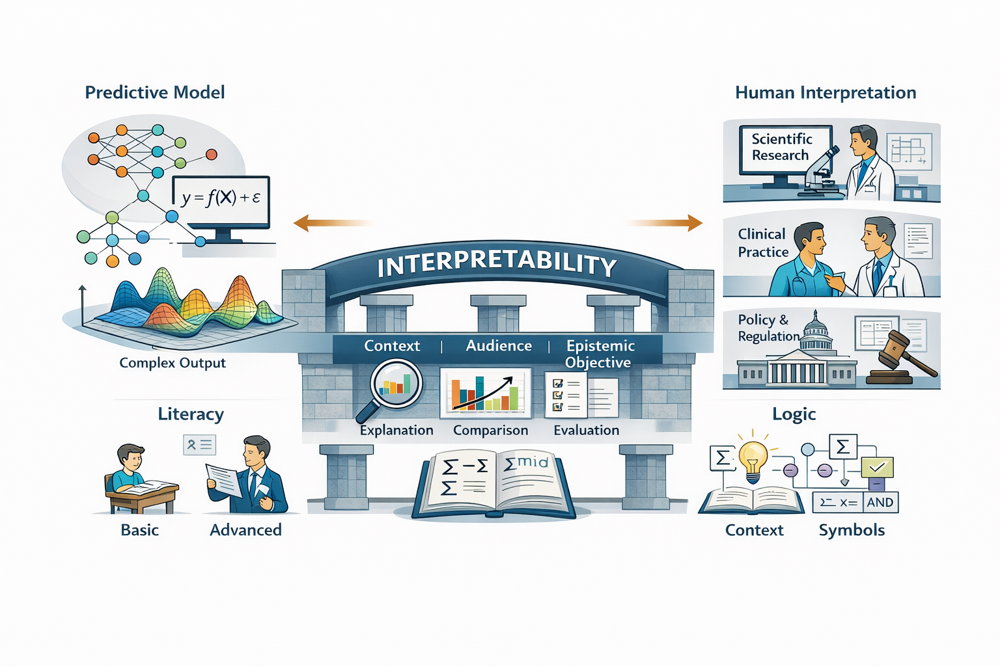
12.2 The context of communication
Every explanation presupposes a communicative structure. There is a system that generates signals, a representation of those signals, and an agent who interprets them within a conceptual framework. A predictive model encodes relationships between predictors and outcomes in a formal structure. However, this structure is typically not expressed in a form directly accessible to human reasoning. It may be embedded in a large collection of trees, a high-dimensional parameter vector, or a posterior distribution over functions.
Interpretability methods function as translation mechanisms. They construct secondary representations of a trained model in order to expose selected aspects of its internal structure or external behavior. These representations do not reproduce the full complexity of the model. Instead, they selectively preserve features such as predictor relevance, interaction strength, marginal effects, structural stability, or uncertainty.
From the perspective of the fundamental problem of communication, no representation is transmitted without transformation. A model encodes structure in mathematical or algorithmic form; interpretability techniques decode and re-encode that structure into forms compatible with human conceptual systems. The adequacy of an interpretability method depends on whether it preserves the structural features that are epistemically relevant in the context of use.
12.3 Scientific communication
In scientific practice, models serve not only as predictive instruments but also as representational frameworks. A linear regression expresses relationships through coefficients under explicit distributional and structural assumptions. A logistic regression encodes associations in terms of log-odds. A decision tree expresses structure through recursive partitioning of the predictor space. Each modeling framework carries an implicit theory of explanation grounded in its parameterization and assumptions.
Classical statistical models were often selected in part because their parameters possessed direct interpretative meaning. With the development of modern machine learning algorithms—such as random forests, gradient boosting machines, and neural networks—the emphasis shifted toward predictive performance in complex and high-dimensional settings. As model structure became more intricate, interpretability increasingly required dedicated methodological development. Models became black boxes, and the aim of this chapter is to make the main interpretive strategies explicit, including their assumptions, their limitations, and the kinds of representational objects they produce.
Interpretability procedures may therefore be regarded as meta-modeling operations. They take a fitted model as input and derive structured summaries of its behavior under controlled perturbations or structural inspection, often through visual representations designed to support scrutiny and comparison.
12.4 Models and representations as communication
Formally, a supervised learning model can be described as a function
\(g : \mathcal{X} \rightarrow \mathcal{Y}\),
where \(\mathcal{X}\) denotes the predictor space and \(\mathcal{Y}\) the response space. In practice, the learned mapping is rarely available in closed analytical form. Instead, it is encoded in computational structures: regression coefficients, weighted sums, collections of trees, boosting iterations, neural layers, or posterior samples.
Interpretability techniques construct alternative representations of this mapping. These may emphasize the relative influence of predictors, the presence of interaction effects, the shape of marginal response functions, or the stability of structural features across model realizations. Each such representation abstracts from certain aspects of the original mapping while preserving others. The design of interpretability methods therefore involves explicit trade-offs between fidelity to the fitted model, robustness to sampling variability and noise, computational feasibility in high dimensions, and cognitive clarity for a target audience.
A useful way to formalize this point is to view interpretability as producing a representation \(\mathcal{R}\) from a model \(g\) and data \(D\) through a transformation operator \(\mathcal{T}\):
\(\mathcal{T}(g, D) \mapsto \mathcal{R}\).
The representation \(\mathcal{R}\) can take multiple forms, including scalar summaries (importance scores), structured objects (interaction matrices), functional summaries (marginal effect curves), or geometric objects (networks, embeddings of proximity structure). The evaluation of \(\mathcal{R}\) depends on whether it supports the epistemic objective at hand—explanation, auditing, validation, or decision support—given the literacy level and symbolic logic available to the audience.
13 Model-Dependent and Model-Agnostic Methods
Interpretability methods are commonly classified into two categories: model-dependent (embedded) and model-agnostic (Figure 13.1).
Model-dependent methods exploit the internal structure of a specific algorithm. They derive explanations from how the model is constructed and parameterized. Model-agnostic methods, by contrast, treat the fitted model as a black box and rely exclusively on its predictive behavior under controlled input variation.
This distinction reflects two complementary interpretative strategies. One examines structural components; the other examines functional behavior. Structural strategies tend to be computationally efficient and tightly aligned with the model class, while functional strategies are more broadly applicable but can be computationally intensive and sensitive to the data-generating structure, especially when predictors are correlated or constrained.
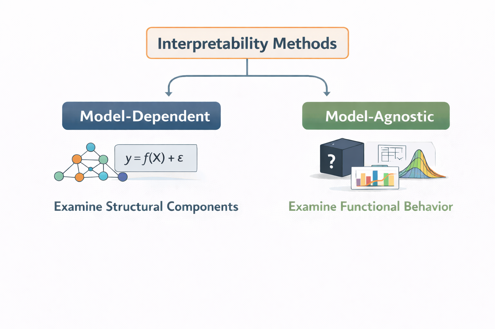
13.1 Model-Dependent Methods
13.1.1 Linear Models: OLS, LASSO, Ridge, Elastic Net
Model-dependent interpretability is most transparent in linear models, because the fitted structure is directly expressed through a coefficient vector. In this setting, each coefficient represents the expected change in the outcome associated with a one-unit increase in a predictor, holding the remaining predictors fixed. Since the predictors were preprocessed consistently, the coefficient magnitudes can also be compared as relative measures of influence within the fitted model.
13.1.1.1 Ordinary Least Squares (OLS)
We begin with the ordinary least squares (OLS) model. The code below reads the saved OLS object, retrieves the coefficient table stored during model fitting, and selects the ten coefficients with the largest absolute magnitude. This provides a compact summary of the strongest additive effects in the unpenalized linear specification.
# ===============================================================
# OLS coefficient inspection (lung_sim_complete example)
# ===============================================================
models_dir <- "/Users/danilosarti/Documents/ai_health_book/models/lung_sim_complete"
ols_obj <- readRDS(file.path(models_dir, "ols_small.rds"))
coef_ols_tbl <- ols_obj$coef_tbl
coef_ols_ranked <- coef_ols_tbl %>%
dplyr::filter(term != "(Intercept)") %>%
dplyr::arrange(desc(abs_estimate)) %>%
dplyr::select(term, estimate, std.error, statistic, p.value, abs_estimate)
coef_ols_ranked# A tibble: 5 × 6
term estimate std.error statistic p.value abs_estimate
<chr> <dbl> <dbl> <dbl> <dbl> <dbl>
1 ph.ecog -54.8 8.35 -6.56 6.72e-10 54.8
2 wt.loss -42.8 4.14 -10.3 1.32e-19 42.8
3 ph.karno 39.2 8.14 4.82 3.24e- 6 39.2
4 sex_male -2.96 3.95 -0.750 4.54e- 1 2.96
5 age -0.725 3.87 -0.187 8.52e- 1 0.725The OLS coefficient table summarizes the strongest additive effects in the unpenalized linear model fitted to the simulated lung cancer dataset. The largest coefficients in absolute magnitude correspond to the clinical status variables ph.ecog (−54.8) and wt.loss (−42.8), indicating that poorer performance status and greater weight loss are strongly associated with shorter predicted survival time. Both variables capture aspects of patient deterioration and disease burden, so their strong negative association with the outcome is consistent with the structure embedded in the simulated data-generating process. By contrast, the Karnofsky performance score ph.karno appears with a large positive coefficient (39.2), reflecting the fact that higher functional capacity is associated with longer expected survival time.
The remaining predictors have considerably smaller estimated effects. The coefficient for sex_male (−2.96) suggests a weak negative association with survival time, while the effect of age (−0.73) is minimal once functional status variables are included in the model. Both predictors also show large p-values, indicating substantial uncertainty in their estimated contribution within this linear specification. Overall, the OLS model captures a clinically interpretable additive structure dominated by measures of patient condition and functional status. However, because OLS assumes a purely linear and additive relationship and does not include regularization, the resulting coefficients may still be sensitive to correlations among predictors and may fail to capture nonlinear patterns or interactions present in the underlying data-generating mechanism.
13.1.1.2 Penalized linear models: LASSO, Ridge, and Elastic Net
We now compare this unpenalized baseline with three regularized linear models: LASSO, Ridge, and Elastic Net. These methods preserve the same basic additive structure, but they modify the estimation procedure through penalization. Ridge shrinks all coefficients continuously toward zero, LASSO can set many coefficients exactly to zero, and Elastic Net combines both mechanisms.
The next code block reads the saved coefficient tables for the three penalized models, removes coefficients that were shrunk to zero, orders the remaining coefficients by absolute magnitude, and extracts the ten most important terms in each case. Since penalized regression does not naturally provide standard errors or p-values in the same way as OLS, the tables focus on the coefficient estimates themselves and their absolute size.
# ===============================================================
# Penalized linear models — coefficient inspection
# lung_sim_complete example
# ===============================================================
glmnet_obj <- readRDS(file.path(models_dir, "glmnet_small.rds"))
coef_lasso_tbl <- glmnet_obj$coef_lasso_tbl
coef_ridge_tbl <- glmnet_obj$coef_ridge_tbl
coef_enet_tbl <- glmnet_obj$coef_enet_tbl
coef_lasso_ranked <- coef_lasso_tbl %>%
dplyr::filter(estimate != 0) %>%
dplyr::arrange(desc(abs_estimate)) %>%
dplyr::select(term, estimate, abs_estimate)
coef_ridge_ranked <- coef_ridge_tbl %>%
dplyr::filter(estimate != 0) %>%
dplyr::arrange(desc(abs_estimate)) %>%
dplyr::select(term, estimate, abs_estimate)
coef_enet_ranked <- coef_enet_tbl %>%
dplyr::filter(estimate != 0) %>%
dplyr::arrange(desc(abs_estimate)) %>%
dplyr::select(term, estimate, abs_estimate)
coef_lasso_ranked term estimate abs_estimate
1 ph.ecog -53.59112 53.59112
2 wt.loss -40.52776 40.52776
3 ph.karno 37.22477 37.22477coef_ridge_ranked term estimate abs_estimate
1 ph.ecog -50.3910516 50.3910516
2 wt.loss -40.4722700 40.4722700
3 ph.karno 40.1681138 40.1681138
4 sex_male -2.9850627 2.9850627
5 age -0.8697526 0.8697526coef_enet_ranked term estimate abs_estimate
1 ph.ecog -53.897104 53.897104
2 wt.loss -41.958996 41.958996
3 ph.karno 38.925372 38.925372
4 sex_male -2.161977 2.161977The three penalized models recover a highly consistent set of influential predictors in the lung cancer example. Across LASSO, Ridge, and Elastic Net, the clinical status variables ph.ecog, wt.loss, and ph.karno consistently appear with the largest coefficients in absolute magnitude. Poorer ECOG performance status (ph.ecog) and greater weight loss (wt.loss) are associated with shorter predicted survival time, while higher Karnofsky scores (ph.karno) are associated with longer expected survival time. These results mirror the structure observed in the OLS model and reinforce the central role of patient functional status and clinical deterioration in determining prognosis within the simulated data-generating process.
The main differences among the penalized models arise in the sparsity and shrinkage of the coefficients. LASSO produces the most compact representation, retaining only the three strongest predictors (ph.ecog, wt.loss, and ph.karno) and shrinking the remaining coefficients to zero. Ridge regression, by contrast, retains all predictors but shrinks them smoothly toward zero, resulting in a denser coefficient profile that still includes smaller effects such as sex_male and age. Elastic Net occupies an intermediate position: it preserves the dominant predictors and retains a small additional effect for sex_male, while still producing a relatively sparse representation. These patterns illustrate the central logic of regularization: Ridge stabilizes estimation through continuous shrinkage, LASSO performs variable selection, and Elastic Net balances both mechanisms. Predictors that remain large across all three models can therefore be interpreted as particularly stable signals in the predictive structure of the data.
13.1.1.3 Comparing coefficient structures across linear models
A useful way to summarize these differences is to compare the coefficients visually across models. The next code block combines the top coefficients from OLS, LASSO, Ridge, and Elastic Net into a single table and plots their estimates side by side. This makes it easier to see which predictors remain stable across models and how regularization changes the magnitude of the fitted effects.
# ===============================================================
# Compare coefficients across linear models
# lung_sim_complete example
# ===============================================================
coef_compare <- bind_rows(
coef_ols_ranked %>% select(term, estimate) %>% mutate(model = "OLS"),
coef_lasso_ranked %>% select(term, estimate) %>% mutate(model = "LASSO"),
coef_ridge_ranked %>% select(term, estimate) %>% mutate(model = "Ridge"),
coef_enet_ranked %>% select(term, estimate) %>% mutate(model = "Elastic Net")
)
coef_compare %>%
ggplot(aes(x = reorder(term, abs(estimate)), y = estimate, color = model)) +
geom_point(size = 3) +
coord_flip() +
labs(
title = "Coefficient comparison across linear models",
x = "",
y = "Coefficient estimate"
) +
theme_bw(base_size = 12)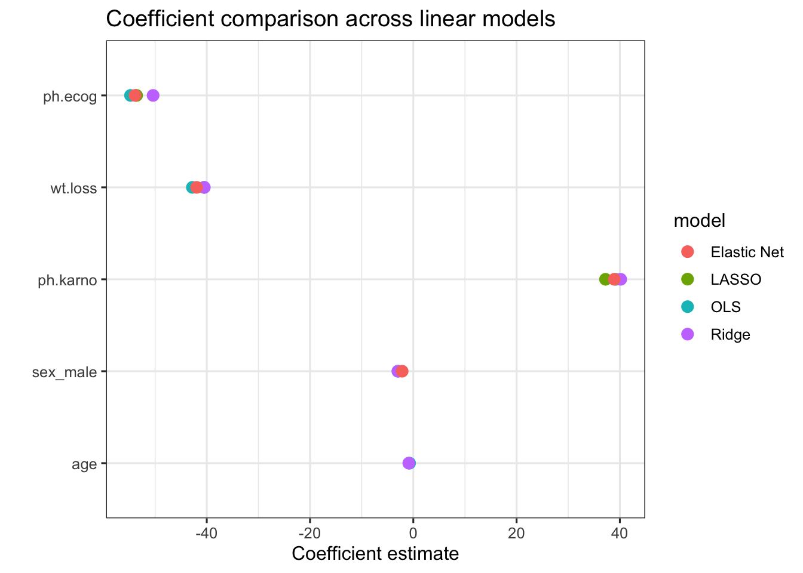
The comparison plot makes the effect of regularization visually explicit. OLS produces the largest coefficient magnitudes overall, reflecting the absence of penalization. Ridge shrinks coefficients more smoothly toward zero while retaining all predictors, resulting in a denser but more conservative representation. LASSO produces the sparsest model, keeping only the three dominant predictors—ph.ecog, wt.loss, and ph.karno—and shrinking the remaining coefficients exactly to zero. Elastic Net occupies an intermediate position: like LASSO, it preserves the strongest predictors, but it also retains a small coefficient for sex_male, reflecting its balance between shrinkage and variable selection.
Several terms remain strikingly stable across models. The variables ph.ecog, wt.loss, and ph.karno consistently appear with the largest coefficients in absolute magnitude, reinforcing the conclusion that patient functional status and clinical deterioration are the main structural drivers of predicted survival time in this example. By contrast, sex_male appears only in OLS, Ridge, and Elastic Net, while age is retained only in OLS and Ridge with very small magnitude, suggesting that these variables provide weaker or less stable signal once regularization is introduced.
This sequence of outputs illustrates the essence of model-dependent interpretability in linear settings. The explanatory structure is encoded directly in the coefficient vector, but its final form depends strongly on the fitting procedure. OLS offers the clearest unpenalized additive baseline. Ridge yields a dense but stabilized representation. LASSO produces a sparse explanatory narrative focused only on the strongest predictors. Elastic Net lies between these two extremes, retaining the dominant variables while allowing limited additional structure. Together, these models provide an interpretable bridge between classical regression and more flexible predictive methods.
This coefficient-based perspective is especially powerful when the internal structure of the model is itself meaningful, as in linear and regularized linear regression. However, many modern predictive models do not expose their logic through a compact parameter vector. In those settings, interpretability must often be constructed from model behavior rather than read directly from model structure, motivating the move to tree-based summaries and model-agnostic methods.
13.2 Decision trees
13.2.1 Recursive partitioning as explanation
Beyond linear models, decision trees provide another important example of model-dependent interpretability. In a regression or classification tree, the fitted model is expressed as a sequence of recursive partitioning rules applied to the predictor space. Each internal node corresponds to a split on one predictor, and each terminal node corresponds to a predicted outcome for observations satisfying the sequence of conditions along that branch.
This makes single trees intrinsically interpretable. Unlike linear models, where interpretation is carried by a vector of coefficients, trees encode explanation through a rule-based structure. A fitted tree can be read as a hierarchical set of conditional statements: if a patient satisfies one condition, the model follows one branch; otherwise it follows another. In this sense, the tree itself becomes an explanatory object. Its structure reveals which variables are used first, which thresholds define meaningful partitions, and how the predictor space is divided into clinically distinct subgroups.
In the lung cancer example used in this chapter, a regression tree may begin by splitting patients according to performance status (ph.ecog) or weight loss (wt.loss), two variables that strongly influence predicted survival time. Subsequent splits may refine the prediction using variables such as Karnofsky score (ph.karno), sex, or age. These partitions define subgroups of patients with different expected survival profiles. Variables appearing in early splits often play a particularly influential role in the partitioning strategy of the tree, although this should not be confused with a formal global measure of variable importance.
Tree ensembles such as Random Forests, Gradient Boosting, and Bayesian Additive Regression Trees extend this idea by aggregating large numbers of trees. Individual trees in these ensembles are usually not interpreted directly, because the predictive model is distributed across hundreds of trees. Instead, interpretation relies on structural summaries derived from the ensemble, such as variable importance measures based on split frequency, impurity reduction, or prediction degradation under variable perturbation. These summaries remain model-dependent because they arise directly from the internal architecture of the fitted tree-based model.
At this stage it is useful to distinguish these embedded structural summaries from model-agnostic interpretability techniques. Some interpretability tools can operate in both settings. For example, the vivid framework combines measures of variable importance and interaction strength that can be derived either from model-specific structures or from model-agnostic procedures such as permutation and partial dependence. Later in this chapter we will examine these approaches in more detail. For now, the focus remains on the structural interpretability naturally provided by single trees and tree-based models.
# ===============================================================
# Load saved CART model
# ===============================================================
models_dir <- "/Users/danilosarti/Documents/ai_health_book/models/lung_sim_complete"
tree_obj <- readRDS(file.path(models_dir, "tree_reg_small.rds"))
tree_fit <- tree_obj$model
tree_cp_tbl <- as.data.frame(tree_obj$cp_table)
tree_best_cp <- tree_obj$best_cp
tree_cp_tbl CP nsplit rel error xerror xstd
1 0.571747566 0 1.00000000 1.0082779 0.08267888
2 0.207274083 1 0.42825243 0.4342982 0.03712413
3 0.076429740 2 0.22097835 0.2265378 0.02776362
4 0.025378203 3 0.14454861 0.1565023 0.01812926
5 0.016828606 4 0.11917041 0.1515211 0.01777722
6 0.007502575 5 0.10234180 0.1382555 0.01565826
7 0.007123762 6 0.09483923 0.1346657 0.01656184
8 0.005841038 7 0.08771547 0.1261941 0.01510189
9 0.005813676 8 0.08187443 0.1259128 0.01508339
10 0.003598537 9 0.07606075 0.1190789 0.01445756
11 0.003324699 10 0.07246221 0.1195669 0.01370590
12 0.002045751 11 0.06913752 0.1196517 0.01389941
13 0.001000000 12 0.06709176 0.1214385 0.01448069tree_best_cp[1] 0.003598537library(rpart.plot)
rpart.plot::rpart.plot(
tree_fit,
type = 2,
extra = 101,
fallen.leaves = TRUE,
under = TRUE,
cex = 0.7
)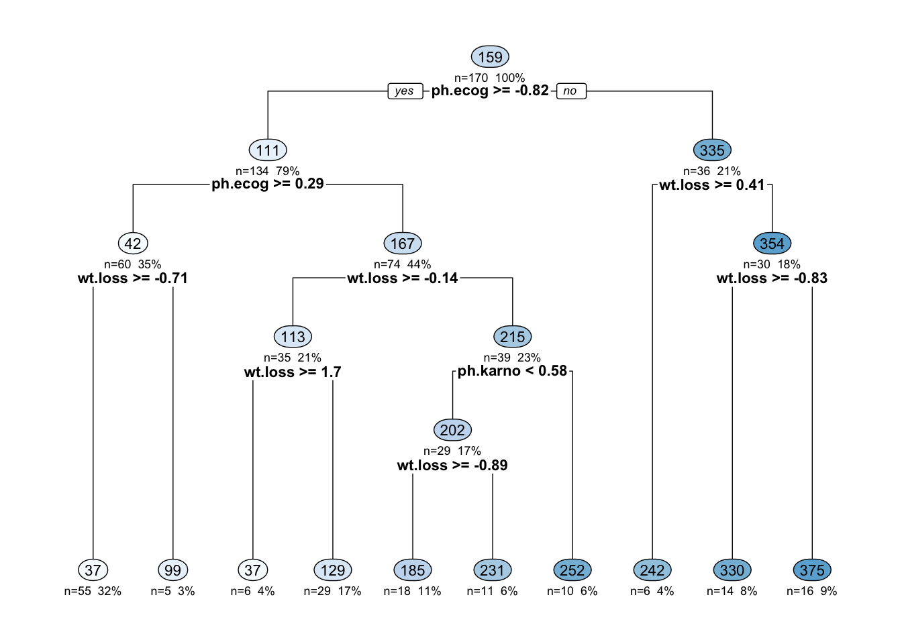
According to the figure above, the regression tree partitions the patient population through a sequence of simple decision rules, each based on a single predictor and threshold. The first split occurs on ph.ecog, which represents the ECOG performance status of the patient. This initial partition separates patients with relatively better functional status from those with worse performance status, producing two groups with markedly different predicted survival times. Patients with poorer ECOG status fall into a branch with substantially lower predicted survival, while those with better performance status move to a branch associated with longer expected survival.
Within these branches, the tree further refines predictions using variables related to patient condition, particularly wt.loss and ph.karno. For example, among patients with relatively good ECOG status, weight loss becomes the next important partitioning variable, separating individuals with greater weight loss—who tend to have shorter predicted survival—from those with more stable weight. In another branch, the Karnofsky score (ph.karno) is used to refine predictions, with higher values indicating better functional capacity and therefore longer expected survival time.
Overall, the structure of the tree reveals a clinically interpretable hierarchy of predictors. Functional status measured by ECOG appears as the most influential variable, followed by indicators of physical deterioration such as weight loss and Karnofsky score. Rather than relying on a single additive equation, the tree divides the population into clinically meaningful subgroups with distinct survival profiles. In this way, the regression tree provides an intuitive representation of how combinations of clinical variables jointly shape predicted outcomes.
13.2.2 Tree ensembles: embedded structural summaries
13.2.2.1 Random Forests
Random forests replace the single-tree logic of direct rule reading with an ensemble-based logic of aggregated structural summaries. Instead of interpreting a single sequence of decision rules, interpretation focuses on how predictive influence is distributed across many trees. In practice, this is commonly examined through variable importance measures and, when relevant, through summaries of interaction structure across the ensemble.
In this chapter we use two complementary perspectives. First, we examine the embedded importance information stored directly in the fitted random forest model. This provides a model-dependent summary of how strongly each predictor contributed to the construction of the ensemble during training. Second, we later use the vivid framework to construct a joint representation of variable importance and interaction strength, allowing us to move from simple rankings toward a more structured view of the predictive mechanisms captured by the forest.
The next chunk loads the fitted random forest model and extracts its embedded variable importance scores. These values provide a first structural summary of the ensemble before we move to richer visual summaries such as VIVI matrices and interaction networks.
# ===============================================================
# Random Forest embedded importance
# ===============================================================
rf_obj <- readRDS(file.path(models_dir, "rf_reg_small.rds"))
rf_fit <- rf_obj$model
rf_vimp_tbl <- tibble(
term = names(rf_fit$variable.importance),
importance = as.numeric(rf_fit$variable.importance)
) %>%
arrange(desc(importance))
rf_vimp_tbl# A tibble: 5 × 2
term importance
<chr> <dbl>
1 ph.ecog 970839.
2 ph.karno 799544.
3 wt.loss 496534.
4 age 90357.
5 sex_male 14450.The table above reports the embedded variable importance values produced by the fitted random forest. Since this model was trained using impurity-based importance, the scores summarize how much each predictor contributed, across the ensemble, to reductions in node impurity during tree construction. Predictors with larger values therefore played a stronger role in the recursive partitioning strategy of the forest.
In this example, the variables ph.ecog and ph.karno appear as the most influential predictors, followed by wt.loss. These variables represent different aspects of patient functional status and physical deterioration, which is consistent with the clinical logic already observed in the linear models and in the regression tree. By contrast, age and sex_male receive substantially smaller importance values, indicating that they play a more limited role in the predictive structure of the forest.
Unlike the coefficient-based interpretation of linear models, these importance values do not indicate the direction of the effect. They identify which predictors contributed most strongly to prediction accuracy, but they do not tell us whether increasing a predictor raises or lowers the expected outcome. For that reason, tree-based importance should be interpreted as a measure of structural relevance rather than as a signed effect size. A simple graphical summary can help highlight the dominant predictors more clearly.
A simple graphical summary helps identify the dominant predictors more clearly.
rf_vimp_tbl %>%
slice_max(order_by = importance, n = 15) %>%
ggplot(aes(x = reorder(term, importance), y = importance)) +
geom_col() +
coord_flip() +
labs(
title = "Random Forest embedded variable importance",
x = "",
y = "Importance"
) +
theme_bw(base_size = 12)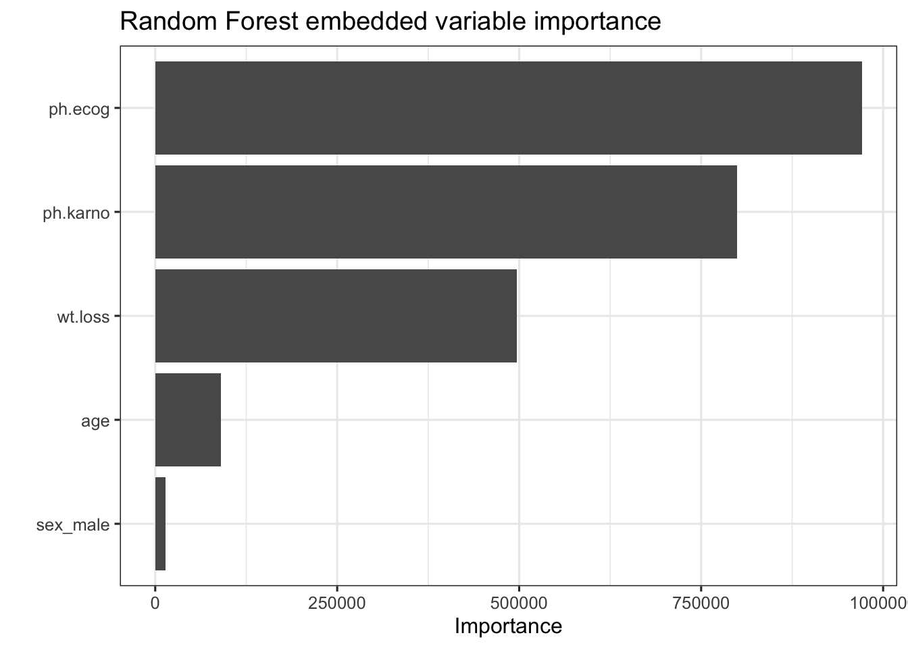
Embedded importance, however, still provides only a partial view of the model. It summarizes marginal structural relevance, but it does not directly show whether important variables are acting mainly through additive effects or through interactions. To study this broader structure, we now turn to a VIVI representation using the vivid package.
13.2.2.2 Gradient boosting models (XGBoost)
Gradient boosting models extend the tree-based logic in a different way from random forests. Instead of building many trees independently and averaging their predictions, boosting constructs trees sequentially. Each new tree is trained to improve the errors made by the previous ensemble, so that predictive structure is accumulated stage by stage. Interpretation therefore focuses not on a single tree, but on how predictive influence is distributed across the boosting process.
As with random forests, we begin by examining model-dependent structural summaries. For XGBoost, embedded importance measures are derived from the fitted boosting ensemble itself. These importance scores summarize how strongly each predictor contributed to the boosted trees according to criteria such as improvement in the objective function, frequency of use in splits, or the number of observations affected by those splits. In the present chapter, we focus on Gain, which measures the average contribution of a variable to improving model fit across the ensemble.
The next chunk loads the fitted XGBoost model and extracts its embedded variable importance values. These provide a first structural summary of how the boosted model distributed predictive work across the clinical predictors.
In an analougous manner the following codes extract variable importance from XGboost models.
# ===============================================================
# XGBoost embedded importance
# ===============================================================
library(xgboost)
xgb_obj <- readRDS(file.path(models_dir, "xgb_reg_small.rds"))
xgb_fit <- xgb_obj$model
xgb_vimp_tbl <- xgb.importance(model = xgb_fit) %>%
as_tibble() %>%
arrange(desc(Gain))
xgb_vimp_tbl# A tibble: 5 × 4
Feature Gain Cover Frequency
<chr> <dbl> <dbl> <dbl>
1 ph.ecog 0.460 0.164 0.126
2 ph.karno 0.339 0.292 0.307
3 wt.loss 0.183 0.376 0.370
4 age 0.0158 0.148 0.172
5 sex_male 0.00195 0.0198 0.0248xgb_vimp_tbl %>%
ggplot(aes(x = reorder(Feature, Gain), y = Gain)) +
geom_col() +
coord_flip() +
labs(
title = "XGBoost embedded variable importance",
x = "",
y = "Gain"
) +
theme_bw(base_size = 12)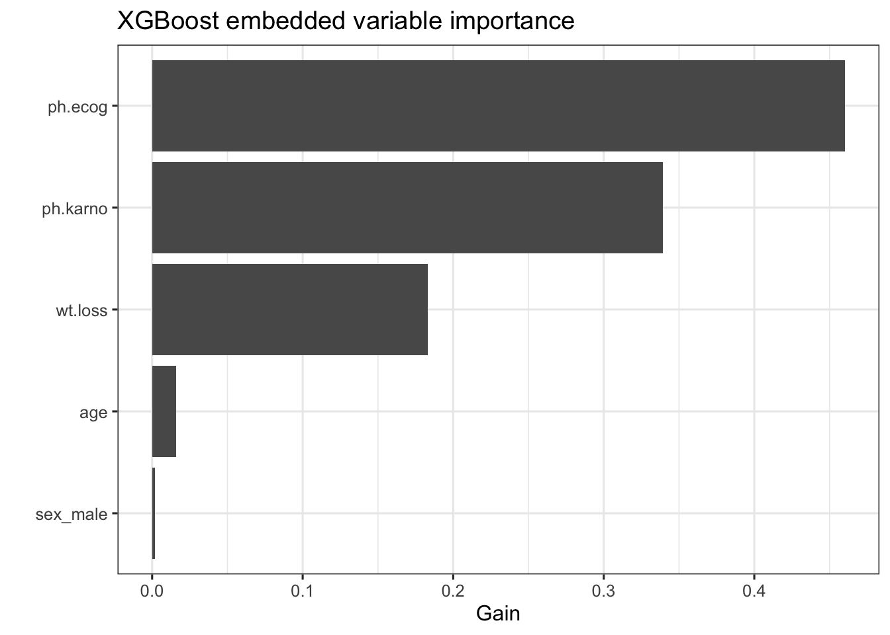
The table above reports the embedded variable importance values produced by the fitted XGBoost model. In this setting, the most relevant summary is Gain, which quantifies how much each predictor contributed, on average, to improving the objective function when it was used in the boosted trees. A predictor with a larger Gain value therefore contributed more strongly to the predictive performance of the ensemble than a predictor with a smaller value. The table also allows a direct numerical ranking of the predictors, making it possible to compare how much predictive work was allocated to each variable within the boosting process.
In the present lung cancer example, the highest Gain values are concentrated in the clinical status variables, especially ph.ecog, ph.karno, and wt.loss, which appear as the three dominant predictors in the boosted model. This indicates that most of the predictive improvement achieved by the XGBoost ensemble is driven by variables related to patient functional status and physical deterioration. By contrast, age and sex_male contribute much smaller gain values, indicating that their role in improving the objective function is comparatively limited. This numerical pattern is consistent with the results already observed in the linear models, the regression tree, and the random forest, where the same three variables also emerged as the main predictive drivers. As with random forests, however, XGBoost importance values do not indicate the direction of an effect. They summarize structural contribution to predictive improvement, but do not directly tell us whether increasing a predictor leads to higher or lower predicted survival time. For that reason, XGBoost importance should be interpreted as a measure of structural relevance rather than as a signed effect size.
13.2.3 From embedded importance to model-agnostic functional summaries
Embedded importance measures derived from tree ensembles provide useful structural summaries of how predictors contribute to model construction. These summaries reveal which predictors were most influential in building the ensemble, but they do not directly show how predictions change as individual predictors vary across their observed ranges. In other words, variable importance identifies which variables matter for prediction, but it does not explain how those variables influence the predicted outcome or whether their effects remain stable across different observations.
To investigate these functional relationships we turn to model-agnostic interpretability methods. These techniques treat the fitted model as a prediction function and study how predictions respond to controlled changes in the input variables. Because they rely only on the prediction mechanism and not on the internal structure of the model, these methods can be applied to any supervised learning algorithm, including tree ensembles and neural networks.
In the analyses that follow, we introduce a sequence of model-agnostic interpretability tools that progressively reveal different aspects of model behavior. We begin with permutation-based measures of global variable importance. We then examine partial dependence plots and individual conditional expectation curves, which describe how model predictions vary as predictors change. Finally, we return to the VIVI framework, which combines importance and interaction structure into a unified representation.
These techniques allow us to move from structural summaries of model construction toward functional explanations of model behavior. In the present example they are applied to three predictive models with increasing structural flexibility: a Random Forest, an XGBoost model, and a Neural Network. Together, these visualizations provide a richer picture of how the clinical predictors influence predicted survival time in the simulated lung cancer dataset.
13.2.4 Global variable importance
13.2.4.1 Permutation importance
Permutation importance provides a model-agnostic way to quantify how strongly a fitted predictive model relies on each predictor variable. The central idea is simple: if a predictor is important for prediction, then breaking the association between that predictor and the outcome should substantially degrade predictive performance.
Let \(\hat{g}\) denote the fitted prediction function and let \(w(\hat{g}, D)\) represent a performance score computed on dataset \(D\), such as RMSE, MAE, or classification error. For a predictor \(X_r\), we construct a perturbed dataset \(D^{\pi_r}\) by randomly permuting the values of \(X_r\) while leaving all other predictors unchanged. The fitted model is then evaluated on this perturbed dataset.
Repeating the permutation \(R\) times yields the permutation importance score
\[ imp_r = w(\hat{g}, D) - \frac{1}{R} \sum_{k=1}^{R} w(\hat{g}, D^{\pi_r,k}) \]
This quantity measures how much predictive performance deteriorates when the information contained in predictor \(X_r\) is destroyed. Large values indicate that the model relies heavily on that predictor, whereas values close to zero suggest that the predictor plays a limited role in the predictive mechanism.
Permutation importance has several advantages. Because it relies only on the prediction function \(\hat{g}\), it can be applied to any supervised learning model, including tree ensembles, boosting models, and neural networks. It also allows a direct comparison of variable importance across different algorithms within the same predictive task.
However, permutation importance must be interpreted carefully when predictors are correlated. Permuting one variable may disrupt the joint dependence structure between predictors, creating combinations of feature values that are rare or unrealistic in the observed data. In such cases the resulting scores should be interpreted as measures of model reliance rather than as causal measures of variable influence.
13.2.5 Interaction diagnostics
Variable importance describes how strongly individual predictors contribute to prediction, but it does not reveal whether predictors act independently or jointly. Many predictive models capture interaction effects, meaning that the influence of one predictor depends on the value of another.
Model-agnostic interaction diagnostics often rely on partial dependence functions. Let \(f_r(x_r)\) and \(f_s(x_s)\) denote the univariate partial dependence functions for predictors \(X_r\) and \(X_s\), and let \(f_{rs}(x_r,x_s)\) denote the bivariate partial dependence surface. If the model is additive in these variables, the joint effect can be approximated by the sum of the marginal effects.
A widely used interaction diagnostic is the Friedman–Popescu \(H\)-statistic, defined as
\[ H_{rs}^2 = \frac{ \sum_{i=1}^{n} \left[ f_{rs}(x_{ir},x_{is}) - f_r(x_{ir}) - f_s(x_{is}) \right]^2 }{ \sum_{i=1}^{n} f_{rs}(x_{ir},x_{is})^2 } \]
Large values of \(H_{rs}\) indicate strong departures from additivity, suggesting that the predictive effect of one variable depends on the value of another. Interaction diagnostics therefore complement variable importance by revealing whether predictive influence arises mainly through marginal effects or through joint relationships among predictors.
13.2.5.1 VIVI: Variable importance and interaction structure
The VIVI framework provides a joint representation of variable importance and interaction strength. Instead of examining these components separately, the method summarizes them in a matrix-like visualization in which diagonal elements represent the marginal importance of each predictor, while off-diagonal elements represent the strength of pairwise interactions between predictors.
Unlike embedded importance measures derived directly from tree-based algorithms, VIVI can be computed in a model-agnostic way. The method relies on partial dependence calculations to estimate both marginal effects and interaction structure, allowing the same interpretability framework to be applied across very different modeling approaches.
In the present example we compute VIVI summaries for the Random Forest, XGBoost, and Neural Network models. This comparison allows us to examine how each model distributes predictive influence across the clinical predictors and whether interactions between predictors play a substantial role in the prediction of survival time.
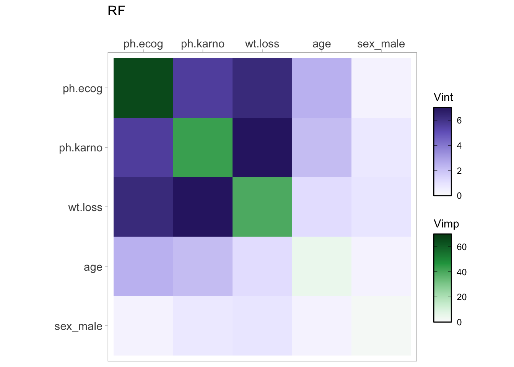
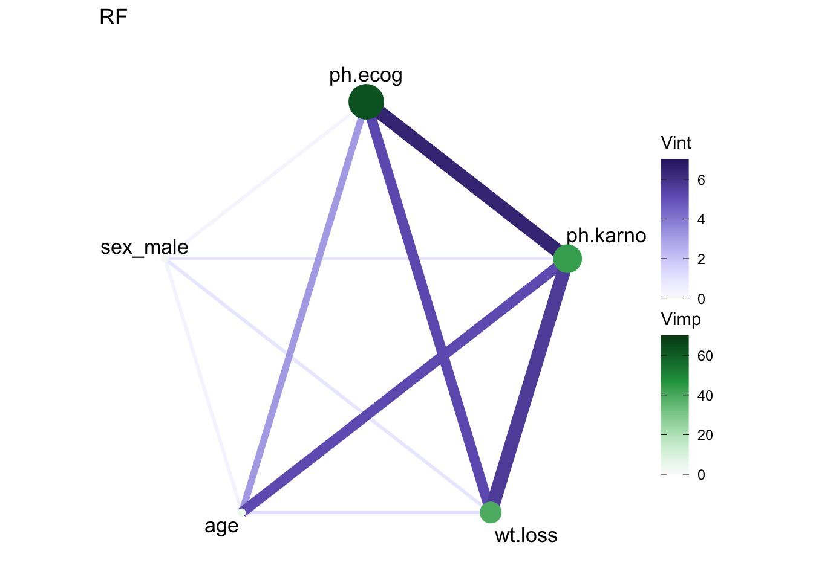
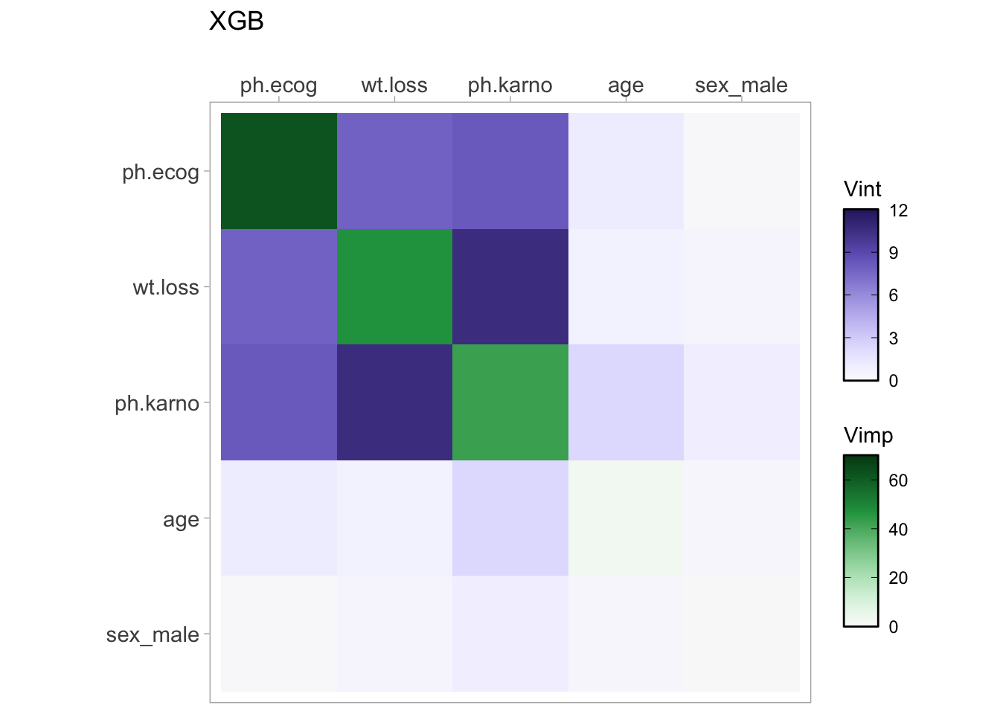
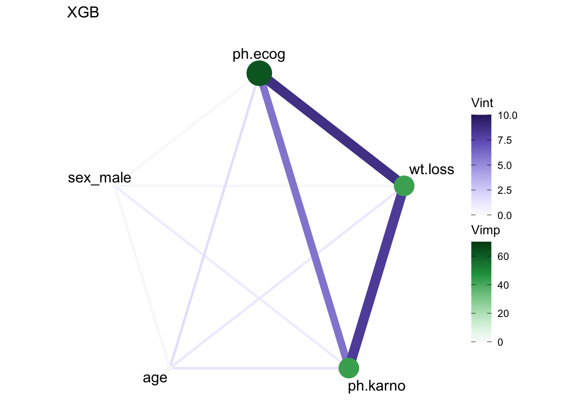
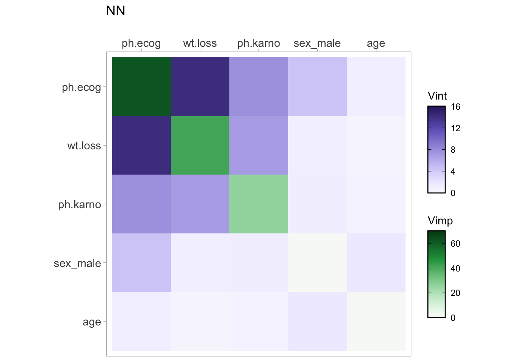
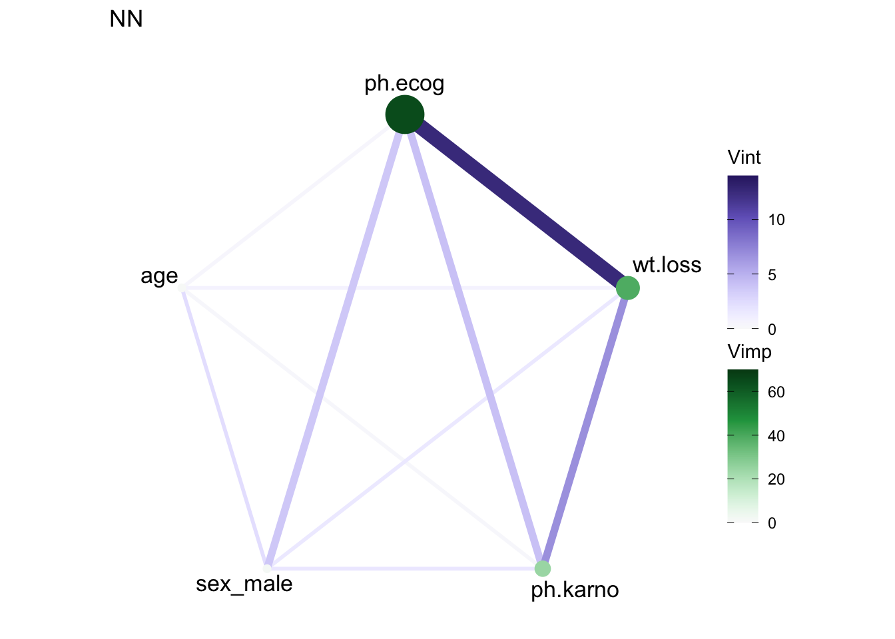
The VIVI representations show a highly consistent predictive structure across the three fitted models. In all cases, the variables ph.ecog, wt.loss, and ph.karno form the main core of the model, appearing with the largest marginal importance values. This indicates that patient functional status and clinical deterioration are the dominant drivers of predicted survival time in the simulated lung cancer example. By contrast, age and sex_male appear with substantially lower importance, suggesting a more limited role in the predictive structure.
The interaction patterns are also informative. Across Random Forest, XGBoost, and Neural Network models, the strongest pairwise interactions are concentrated among ph.ecog, wt.loss, and ph.karno. In the Random Forest and XGBoost models, the interaction between wt.loss and ph.karno appears especially strong, while the interaction between ph.ecog and wt.loss is also consistently prominent. In the Neural Network, the interaction structure is slightly more centered on ph.ecog, which acts as a highly important variable connected strongly to both wt.loss and ph.karno. Taken together, these results suggest that the fitted models agree not only on the most important individual predictors, but also on the fact that prediction depends on their joint action rather than on purely additive effects.
# ===============================================================
# Save VIVI objects for later visualisation
# ===============================================================
saveRDS(vivi_rf, file.path(models_dir, "vivi_rf.rds"))
saveRDS(vivi_xgb, file.path(models_dir, "vivi_xgb.rds"))
saveRDS(vivi_nn, file.path(models_dir, "vivi_nn.rds"))13.2.6 Partial dependence and individual conditional expectation
Interpretability methods based on variable importance and interaction summaries provide information about which variables contribute most strongly to prediction. However, these summaries do not directly reveal the functional relationship learned by the model between predictors and the outcome. In other words, they identify the most influential variables, but they do not show how predicted values change as those variables vary. To understand this functional behavior, we turn to model-agnostic techniques that analyze the response surface of the fitted model itself. Two of the most widely used tools for this purpose are Partial Dependence Plots (PDP) and Individual Conditional Expectation (ICE) curves.
Consider a predictive model \(\hat{f}(\mathbf{x})\) trained on a set of predictors \(\mathbf{x} = (x_1, x_2, \ldots, x_p)\). Suppose we wish to understand the effect of a subset of predictors \(\mathbf{x}_S \subseteq \mathbf{x}\), where \(S\) indexes a set of variables of interest, and let \(\mathbf{x}_C\) denote the remaining predictors. The partial dependence function is defined as the expected model prediction when the variables in \(S\) are fixed at specific values and the remaining predictors vary according to their empirical distribution:
\[ f_S(\mathbf{x}_S) = \mathbb{E}_{\mathbf{x}_C}\left[\hat{f}(\mathbf{x}_S, \mathbf{x}_C)\right]. \]
Because the joint distribution of predictors is typically unknown, this expectation is approximated empirically using the observed dataset. Given \(n\) observations, the partial dependence function can be estimated as
\[ \hat{f}_S(\mathbf{x}_S) = \frac{1}{n} \sum_{i=1}^{n} \hat{f}(\mathbf{x}_S, \mathbf{x}_{C,i}), \]
where \(\mathbf{x}_{C,i}\) denotes the observed values of the complementary predictors for observation \(i\). Intuitively, this computation evaluates the model prediction repeatedly while fixing the variable of interest at a chosen value and averaging over all observed combinations of the remaining predictors. By repeating this process across a grid of values for \(\mathbf{x}_S\), we obtain the partial dependence curve, which describes the average predicted response as the predictor varies.
Partial dependence therefore provides a population-level view of the model’s learned relationship between predictors and the outcome. The resulting curves reveal whether the model encodes approximately linear relationships, monotonic nonlinear patterns, or more complex functional shapes. Importantly, PDPs do not depend on the internal structure of the model and can therefore be applied to linear models, tree ensembles, neural networks, and other predictive algorithms.
However, partial dependence curves represent an average effect across all observations. When predictors interact strongly with other variables, averaging may conceal substantial heterogeneity in the individual responses. To address this limitation, Individual Conditional Expectation (ICE) curves examine the model prediction separately for each observation.
For a given observation \(i\), the ICE function is defined as
\[ \hat{f}^{(i)}_S(\mathbf{x}_S) = \hat{f}(\mathbf{x}_S, \mathbf{x}_{C,i}), \]
which represents the predicted response when the predictor of interest varies while all other predictors are fixed at the values observed for that specific individual. Plotting this function for all observations produces a family of curves, each describing how the model prediction would change for a particular observation as the predictor varies.
ICE plots therefore reveal heterogeneity in predictor effects across the dataset. When the individual curves are roughly parallel, the predictor has a relatively homogeneous effect across observations, and the partial dependence curve provides a reliable summary of the relationship. When the curves diverge or intersect, the effect of the predictor depends on the values of other variables, indicating the presence of interactions.
The VIVI analysis revealed that the predictive structure of the models is dominated by three variables: ph.ecog, wt.loss, and ph.karno. These variables represent different aspects of patient functional status and physical deterioration, and they appear not only as the most important predictors across the Random Forest, XGBoost, and Neural Network models, but also as the variables most strongly involved in pairwise interactions. Having identified these key predictors, the next step is to examine how each of them influences the predicted outcome across its range of values.
While variable importance and interaction summaries describe which variables matter for prediction, they do not reveal how the prediction changes as those variables vary. Partial dependence plots address this question by describing how the model prediction changes, on average, as one predictor varies while the remaining predictors are averaged over their empirical distribution. In this way, PDPs provide a functional description of the learned relationship between predictors and the outcome.
In the present lung cancer example, partial dependence analysis focuses on ph.ecog, wt.loss, and ph.karno, allowing us to visualize how each model translates these clinical variables into predicted survival time. Because the same predictors are examined across Random Forest, XGBoost, and Neural Network models, the resulting curves also allow a comparison of how different algorithms approximate the same predictive relationship.
However, partial dependence curves summarize the average relationship across all observations. When predictors interact, averaging may hide important variation in the individual responses. Individual Conditional Expectation (ICE) curves address this limitation by plotting the predicted response for each observation separately as the predictor varies. Instead of a single average curve, ICE plots show a family of curves corresponding to individual patients.
When the ICE curves are roughly parallel, the predictor has a relatively homogeneous effect across observations and the partial dependence curve provides a good summary. When the curves diverge or cross, this suggests that the effect of the predictor varies depending on the values of other variables, indicating the presence of interactions. In the present case, this is particularly relevant because the VIVI analysis already indicated strong interactions among ph.ecog, wt.loss, and ph.karno.
Together, PDP and ICE analyses provide a complementary perspective on the fitted models. PDPs reveal the overall functional relationship learned by the model, while ICE curves reveal how that relationship varies across individuals. This combination allows us to move from structural summaries of the model toward a more detailed understanding of its predictive behavior.
The following chunks of code implement PDP and ICE for our example.
# ===============================================================
# PDP and ICE with vivid — setup
# ===============================================================
library(vivid)
library(dplyr)
library(keras)
library(grid)
vars_focus <- c("ph.ecog", "wt.loss", "ph.karno")
# ------------------------------------------------
# Custom predict functions in vivid format
# IMPORTANT: the argument name must be `data`
# ------------------------------------------------
pFun_rf <- function(fit, data, ...) {
data <- as.data.frame(data)
if ("time" %in% names(data)) {
data <- dplyr::select(data, -time)
}
predict(fit, data = data)$predictions
}
pFun_xgb <- function(fit, data, ...) {
data <- as.data.frame(data)
if ("time" %in% names(data)) {
data <- dplyr::select(data, -time)
}
feature_names <- xgb_obj$feature_names
missing_cols <- setdiff(feature_names, names(data))
if (length(missing_cols) > 0) {
for (mc in missing_cols) {
data[[mc]] <- 0
}
}
data <- data[, feature_names, drop = FALSE]
predict(fit, as.matrix(data))
}
pFun_nn <- function(fit, data, ...) {
data <- as.data.frame(data)
if ("time" %in% names(data)) {
data <- dplyr::select(data, -time)
}
feature_names <- xgb_obj$feature_names
missing_cols <- setdiff(feature_names, names(data))
if (length(missing_cols) > 0) {
for (mc in missing_cols) {
data[[mc]] <- 0
}
}
data <- data[, feature_names, drop = FALSE]
data <- data.matrix(data)
storage.mode(data) <- "double"
as.numeric(fit$predict(data, verbose = 0))
}
# load neural network model
nn_model <- keras::load_model_tf(nn_obj$model_path)13.2.6.1 Random Forest: univariate partial dependence and ICE
# ===============================================================
# Random Forest — univariate PDP and ICE
# ===============================================================
pdpVars(
data = train_baked,
fit = rf_fit,
response = "time",
vars = vars_focus,
nIce = 100,
predictFun = pFun_rf
)
grid::grid.text(
"Random Forest — Univariate PDP and ICE",
x = 0.5, y = 0.98,
gp = grid::gpar(fontsize = 16, fontface = "bold")
)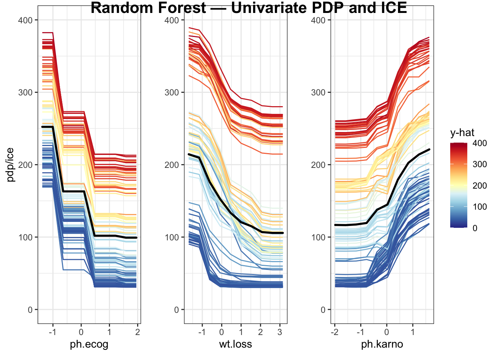
13.2.6.2 XGBoost: univariate partial dependence and ICE
# ===============================================================
# XGBoost — univariate PDP and ICE
# ===============================================================
pdpVars(
data = train_baked,
fit = xgb_fit,
response = "time",
vars = vars_focus,
nIce = 100,
predictFun = pFun_xgb
)
grid::grid.text(
"XGBoost — Univariate PDP and ICE",
x = 0.5, y = 0.98,
gp = grid::gpar(fontsize = 16, fontface = "bold")
)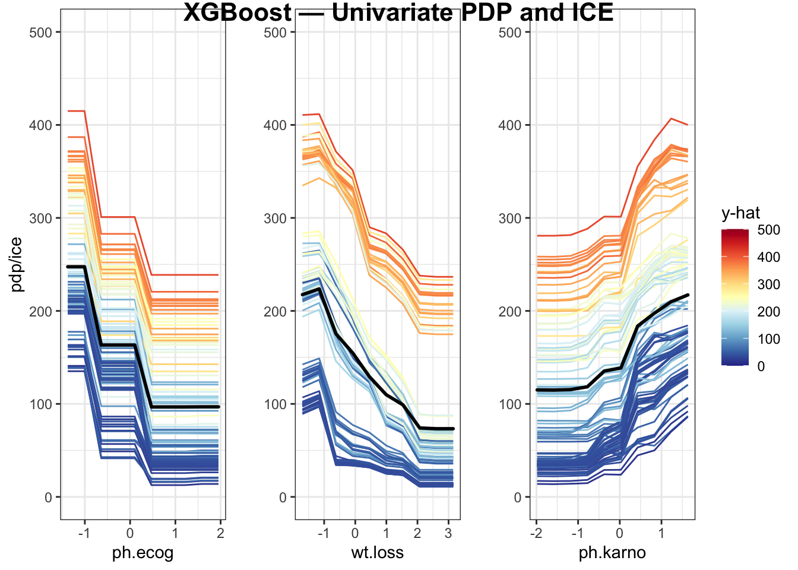
13.2.6.3 Neural Network: univariate partial dependence and ICE
# ===============================================================
# Neural Network — univariate PDP and ICE
# ===============================================================
pdpVars(
data = train_baked,
fit = nn_model,
response = "time",
vars = vars_focus,
nIce = 100,
predictFun = pFun_nn
)
grid::grid.text(
"Neural Network — Univariate PDP and ICE",
x = 0.5, y = 0.98,
gp = grid::gpar(fontsize = 16, fontface = "bold")
)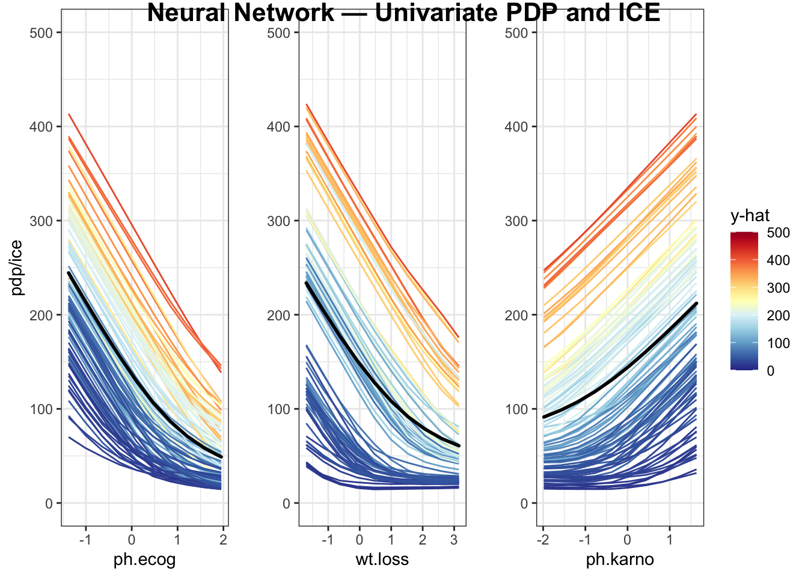
The PDP and ICE plots provide a functional view of how the models translate predictor values into predicted outcomes. In each panel, the horizontal axis represents the value of the predictor being varied, while the vertical axis shows the corresponding predicted survival time produced by the model. The thick black curve represents the partial dependence function, which averages the predicted response across all observations and therefore summarizes the overall relationship learned by the model. The colored curves correspond to individual conditional expectation (ICE) trajectories, each showing how the prediction would change for a specific patient if that predictor varied while the remaining variables were kept fixed at that patient’s observed values. When the ICE curves are roughly parallel, the effect of the predictor is relatively homogeneous across individuals; when the curves diverge or cross, this indicates that the predictor interacts with other variables in the model.
The PDP and ICE visualizations reveal a remarkably consistent functional structure across the three models. For ph.ecog, all algorithms learn a strong negative relationship with predicted survival time: as the ECOG performance score increases, the expected survival decreases sharply. This pattern is particularly clear in the Random Forest and XGBoost models, where the PDP curve shows step-like drops reflecting the tree-based partitioning structure. The neural network produces a smoother but qualitatively similar monotonic decline, indicating that worsening functional status is consistently associated with poorer predicted outcomes.
A similar decreasing relationship appears for wt.loss. Across the three models, larger weight loss is associated with progressively lower predicted survival. In the tree-based models the effect appears as piecewise decreases corresponding to splits in the ensemble, while the neural network again approximates the same relationship with a smooth nonlinear curve. The ICE curves also reveal moderate heterogeneity across individuals, suggesting that the magnitude of the effect depends on other patient characteristics.
By contrast, ph.karno shows the opposite pattern. Higher Karnofsky performance scores are associated with longer predicted survival times, producing a strong positive relationship in all models. As before, Random Forest and XGBoost display piecewise increases reflecting their recursive partitioning structure, while the neural network approximates a smooth increasing function. The ICE curves for this variable show larger dispersion than for the other predictors, indicating that the benefit associated with improved performance status may vary depending on the broader clinical context captured by the remaining predictors.
Taken together, the PDP and ICE analyses reinforce the central importance of functional status variables identified earlier by the VIVI analysis. Across three very different modeling approaches—Random Forest, XGBoost, and Neural Networks—the learned response surface consistently encodes poorer survival predictions for patients with worse ECOG scores or larger weight loss, and improved survival predictions for those with higher Karnofsky performance scores. These results suggest that the models are capturing clinically meaningful patterns rather than idiosyncratic algorithmic artifacts.
13.2.7 Generalized pairwise partial dependence plots
The univariate partial dependence and ICE plots examined above describe how the model prediction changes when a single predictor varies while the remaining predictors are averaged over their empirical distribution. These displays are useful for identifying the marginal functional form associated with each variable, but they do not directly reveal how pairs of predictors act jointly in the fitted response surface. When interpretability requires understanding interactions among predictors, multivariate visual summaries become necessary.
The vivid package provides a graphical tool designed for this purpose: the generalized partial dependence pairs plot, produced by the function pdpPairs(). This visualization extends the logic of univariate partial dependence by representing several layers of information within a single matrix-style display.
In these plots, the diagonal panels contain univariate partial dependence curves together with ICE trajectories, allowing each predictor to be examined individually. The upper triangular panels display bivariate partial dependence surfaces, which describe how the predicted response varies when two predictors change simultaneously while the remaining variables are averaged over their empirical distribution. These surfaces make it possible to detect interaction patterns such as curvature, threshold effects, or regions where the influence of one variable depends on the value of another. Finally, the lower triangular panels display the empirical distribution of the observed predictors, helping to assess whether the regions shown in the partial dependence surfaces are well supported by the available data.
In the present lung cancer example, this visualization is particularly useful because the previous VIVI analysis suggested that ph.ecog, wt.loss, and ph.karno form a strongly interacting set of predictors. The generalized pairs plot therefore allows us to study the joint structure of the learned response surface across the Random Forest, XGBoost, and Neural Network models.
The next figures display the generalized pairwise partial dependence plots for the three fitted models. Each matrix shows how the predicted survival time changes when pairs of predictors vary jointly, while the remaining predictors are averaged over the empirical distribution.
# ===============================================================
# Setup for pairwise PDP visualisations
# ===============================================================
vars_focus <- c("ph.ecog", "wt.loss", "ph.karno")
# ===============================================================
# Random Forest — generalized pairwise PDP
# ===============================================================
pdpPairs(
data = train_baked,
fit = rf_fit,
response = "time",
vars = vars_focus,
gridSize = 10,
nIce = 100,
predictFun = pFun_rf
)Generating ice/pdp fits... waiting...Finished ice/pdpgrid::grid.text(
"Random Forest — Generalized Pairwise Partial Dependence Plot",
x = 0.5, y = 0.98,
gp = grid::gpar(fontsize = 16, fontface = "bold")
)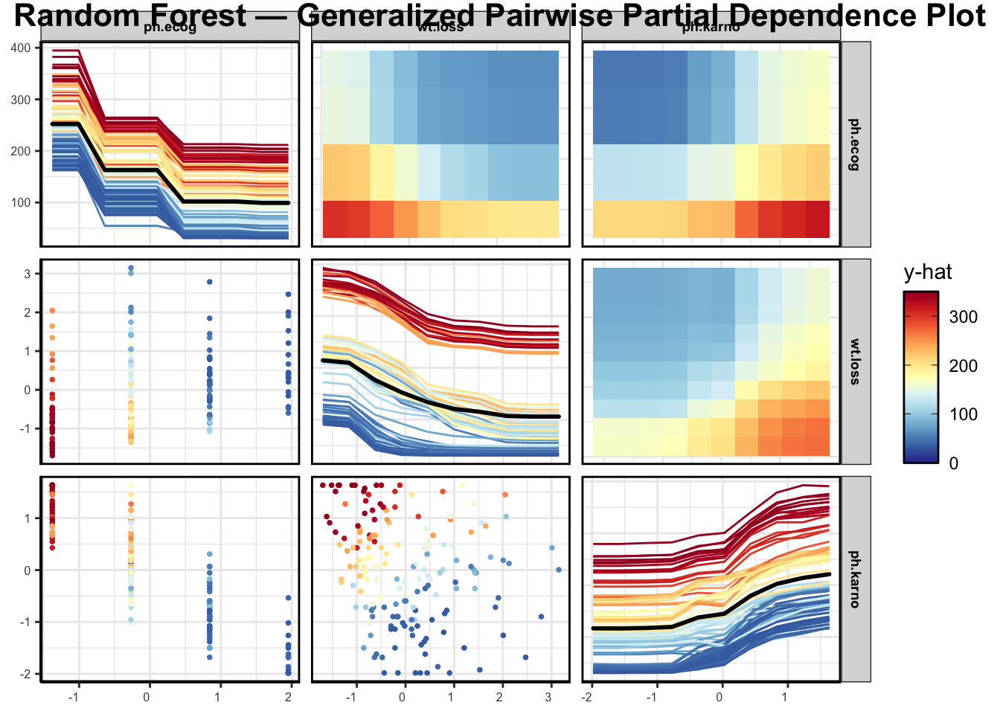
# ===============================================================
# XGBoost — generalized pairwise PDP
# ===============================================================
pdpPairs(
data = train_baked,
fit = xgb_fit,
response = "time",
vars = vars_focus,
gridSize = 10,
nIce = 100,
predictFun = pFun_xgb
)Generating ice/pdp fits... waiting...Finished ice/pdpgrid::grid.text(
"XGBoost — Generalized Pairwise Partial Dependence Plot",
x = 0.5, y = 0.98,
gp = grid::gpar(fontsize = 16, fontface = "bold")
)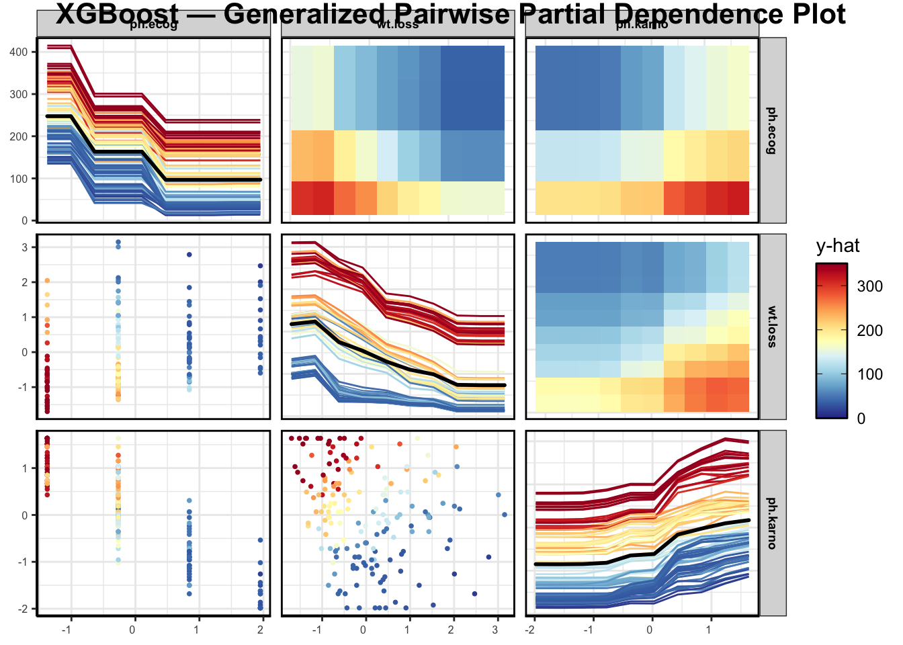
# ===============================================================
# Neural Network — generalized pairwise PDP
# ===============================================================
pdpPairs(
data = train_baked,
fit = nn_model,
response = "time",
vars = vars_focus,
gridSize = 10,
nIce = 100,
predictFun = pFun_nn
)Generating ice/pdp fits... waiting...Finished ice/pdpgrid::grid.text(
"Neural Network — Generalized Pairwise Partial Dependence Plot",
x = 0.5, y = 0.98,
gp = grid::gpar(fontsize = 16, fontface = "bold")
)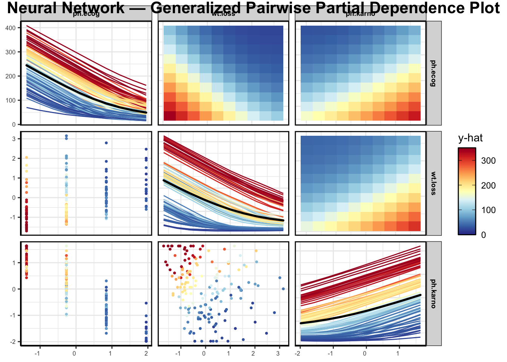
13.2.8 Interpreting generalized pairwise partial dependence plots
The generalized pairwise partial dependence plots combine several complementary visual summaries in a single matrix display. Each panel of the matrix represents a different aspect of the learned predictive structure of the model. The diagonal panels show univariate partial dependence curves together with ICE trajectories, which describe how the predicted outcome changes when a single predictor varies while all other predictors are averaged over their empirical distribution. The thick black curve represents the average partial dependence function, while the colored curves correspond to the individual conditional expectation trajectories for different observations.
The upper triangular panels display bivariate partial dependence surfaces, where the color scale represents the predicted value of the response variable across combinations of two predictors. Warmer colors indicate larger predicted values of the outcome, while cooler colors correspond to smaller predicted values. These surfaces allow the analyst to detect interaction patterns, such as whether the effect of one variable becomes stronger or weaker depending on the value of another variable. Finally, the lower triangular panels show the empirical distribution of the predictors in the observed dataset. These panels provide an important reference because they indicate which regions of the predictor space are actually supported by the data and which regions correspond to extrapolation of the fitted model.
Across the three fitted models—Random Forest, XGBoost, and the Neural Network—the generalized pairwise partial dependence plots reveal a highly consistent structural pattern. The diagonal panels show that ph.ecog and wt.loss have a strong negative association with predicted survival time: as ECOG performance status worsens or as weight loss increases, the predicted survival time decreases substantially. In contrast, ph.karno exhibits the opposite pattern, with higher Karnofsky performance scores associated with increased predicted survival time. These relationships are monotonic in all three models, although their shapes differ slightly across algorithms.
The upper triangular panels reveal that these predictors also interact with one another in shaping the response surface. In particular, combinations of high ECOG scores and high weight loss correspond to regions of very low predicted survival time, as indicated by the deep blue regions of the surfaces. Conversely, combinations of high Karnofsky scores and low weight loss correspond to regions of high predicted survival time. These patterns indicate that the effect of one functional status measure is amplified when the others also reflect patient deterioration. The interaction structure therefore reflects a clinically coherent mechanism in which multiple indicators of declining physiological status jointly determine prognosis.
Although the general structure is consistent across the three models, some differences in smoothness and geometry can be observed. The tree-based models—Random Forest and XGBoost—produce surfaces that appear more piecewise and segmented, reflecting the recursive partitioning structure of tree ensembles. In contrast, the neural network produces smoother response surfaces and more gradual transitions across the predictor space, reflecting the continuous nonlinear functions learned by the network. Despite these architectural differences, the overall interaction patterns remain remarkably similar.
Taken together, these plots provide a coherent interpretation of the fitted models. The three predictors identified earlier by the VIVI analysis—ph.ecog, wt.loss, and ph.karno—form a tightly interacting group of variables that jointly determine predicted survival time. Rather than acting independently, these variables combine to define regions of the predictor space associated with markedly different prognostic outcomes. The consistency of these patterns across Random Forest, XGBoost, and Neural Network models strengthens the interpretation that the models are capturing a stable clinical relationship between functional status and survival rather than artifacts of a specific modeling approach.
13.2.9 Zen Partial Dependence Plots
While generalized pairwise partial dependence plots provide a comprehensive view of bivariate predictor relationships, they become increasingly difficult to read as the number of predictors grows. In a model with \(p\) predictors, the number of possible pairwise displays increases as \(p(p-1)/2\), which can quickly make full pairwise partial dependence grids visually impractical.
To address this problem, the vivid package provides Zen Partial Dependence Plots (ZPDPs) through the function pdpZen(). This visualization is based on the concept of zenplots, introduced by Hofert and Oldford, as a compact strategy for exploring many pairwise relationships in high-dimensional settings. Rather than displaying every possible pairwise panel, the method selects and orders the most relevant variable pairs and arranges them in a zig-zag sequence that preserves readability while emphasizing interpretively important structures.
Formally, let \(X_1, \dots, X_p\) denote the predictors in a fitted model \(\hat{f}\), and let \(I_{jk}\) denote a symmetric measure of pairwise interaction strength between predictors \(X_j\) and \(X_k\), such as the interaction values derived from the VIVI matrix. A Zen Partial Dependence Plot may be understood as a graph-based visualization built on a weighted undirected graph
\[ G = (V, E, W), \]
where each vertex in \(V\) corresponds to a predictor, each edge in \(E\) corresponds to a pair of predictors, and the edge weights \(W_{jk}\) are given by the interaction strengths \(I_{jk}\).
The purpose of the zen layout is to construct a traversal path through the graph that prioritizes edges with larger weights, so that the displayed sequence of bivariate partial dependence plots focuses on the most important pairwise relationships in the model.
This idea is inspired by Eulerian path constructions in graph theory. In an Eulerian traversal, one visits edges of a graph in a systematic order. Zenplots adapt this principle to statistical graphics: instead of drawing all pairwise plots in a matrix, they construct a path through the most relevant variable pairs and display the corresponding bivariate partial dependence surfaces sequentially. In this way, the visualization becomes not only more compact, but also more explicitly guided by interaction strength.
For a given pair of predictors \(X_j\) and \(X_k\), the displayed bivariate partial dependence surface is based on the estimated function
\[ \hat{f}_{jk}(x_j, x_k) = \frac{1}{n} \sum_{i=1}^{n} \hat{f}(x_j, x_k, \mathbf{x}_{C,i}), \]
where \(C\) denotes the set of all remaining predictors and \(\mathbf{x}_{C,i}\) are the observed values of those remaining predictors for observation \(i\).
Each panel of the Zen plot therefore displays the average fitted response over a grid of values of \((x_j, x_k)\) while averaging over the empirical distribution of the other predictors.
The key difference between a generalized pairwise PDP matrix and a Zen PDP is therefore not the mathematical definition of the bivariate partial dependence surface itself, but the selection and ordering of the displayed predictor pairs. The generalized pairwise PDP aims at exhaustive display over a selected subset of variables, whereas the Zen PDP aims at structured prioritization, concentrating visual attention on variable pairs that are most relevant according to the model’s interaction structure.
In practice, this makes Zen Partial Dependence Plots especially useful in settings where the predictor space is moderate or high dimensional and where a full matrix of pairwise PDPs would either exceed the available plotting space or dilute attention across too many low-information panels. In such cases, the Zen layout acts as a navigational device through the model’s most relevant interaction surfaces.
# ===============================================================
# Zen Partial Dependence Plot (ZPDP) — Random Forest
# ===============================================================
library(vivid)
library(grid)
set.seed(1701)
pdpZen(
data = train_baked,
fit = rf_fit,
response = "time",
gridSize = 10,
nmax = 500,
predictFun = pFun_rf
)Warning in fun(libname, pkgname): couldn't connect to display ":0"Generating ice/pdp fits... waiting...Finished ice/pdpgrid::grid.text(
"Random Forest — Zen Partial Dependence Plot",
x = 0.5,
y = 0.98,
gp = grid::gpar(fontsize = 16, fontface = "bold")
)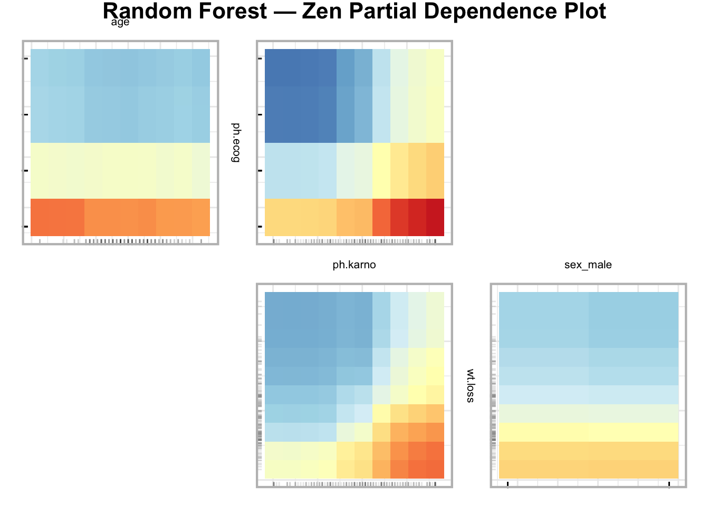
13.2.10 Zen plot guided by interaction strength
A particularly useful feature of the Zen approach is that the traversal path can be defined explicitly from the interaction structure previously estimated by the VIVI framework. In this chapter, this creates a coherent interpretability pipeline: first we estimate variable importance and pairwise interaction strength using vivi(), then we use those interaction values to determine which bivariate partial dependence surfaces deserve visual emphasis.
Let \(M\) denote the VIVI matrix, where diagonal elements contain variable importance scores and off-diagonal elements contain pairwise interaction strengths. To construct a Zen path, one first removes the diagonal values and retains only the off-diagonal interaction entries. A threshold may then be imposed to exclude weak interactions. The remaining weighted graph is used to define a path through the strongest variable pairs.
This makes the Zen PDP especially valuable from a didactic perspective, because it does not merely show a compact collection of pairwise PDPs. Instead, it presents a graph-ordered sequence of the most relevant interaction surfaces, directly linking the visualization to the interaction ranking already identified in the VIVI analysis.
In the present lung cancer example, this means that predictor pairs involving ph.ecog, wt.loss, and ph.karno will tend to appear early in the Zen sequence whenever they exhibit the largest interaction values. The resulting display therefore acts as a focused continuation of the VIVI analysis: the heatmap and network identify the key interacting variables, and the Zen PDP reveals how the fitted response surface behaves over those pairs.
13.2.11 Interpreting the Zen Partial Dependence Plot
The Zen Partial Dependence Plot (Zen PDP) provides a compact visualization of the most relevant pairwise partial dependence surfaces in a predictive model. Rather than displaying all possible combinations of predictors in a full matrix, the Zenplot arranges a sequence of bivariate partial dependence surfaces along a path that prioritizes the strongest interactions identified in the model. Each panel therefore corresponds to one pair of predictors chosen along this interaction path.
In each panel, the horizontal and vertical axes represent the values of two predictors, while the color scale encodes the predicted value of the response variable. Warmer colors correspond to larger predicted survival times, whereas cooler colors correspond to lower predicted values. The surfaces therefore show how the model’s predicted outcome changes as two predictors vary simultaneously, while all remaining predictors are averaged over their empirical distribution.
The ordering of the panels reflects the interaction structure identified earlier through the VIVI analysis. The path used here was constructed from the strongest pairwise interactions in the Random Forest model, so variables that interact strongly appear repeatedly along the sequence of panels. In the present lung cancer example, the most prominent predictors are ph.ecog, ph.karno, and wt.loss, which represent different aspects of patient functional status and physical deterioration. As expected, these variables dominate the interaction path and therefore appear prominently in the Zen PDP.
The surfaces themselves reveal how these variables combine to shape predicted survival time. Panels involving ph.ecog show a clear gradient in which higher ECOG scores—indicating worse performance status—are associated with lower predicted survival time. Similarly, surfaces involving wt.loss display decreasing predictions as weight loss increases, reflecting the negative prognostic role of clinical deterioration. By contrast, panels involving ph.karno show the opposite pattern: higher Karnofsky scores correspond to improved predicted survival outcomes. When these predictors vary jointly, the color gradients become more pronounced, indicating that combinations of poor ECOG status and substantial weight loss produce the lowest predicted survival values, while high Karnofsky scores combined with low weight loss correspond to the most favorable predictions.
Compared with the generalized pairwise PDP matrix presented earlier, the Zen PDP is intentionally selective. Its goal is not to represent every possible interaction, but rather to guide interpretation toward the most informative regions of the predictor space. By following a path through the strongest interactions, the Zen PDP provides a concise visual summary of the interaction structure learned by the model.
From a broader interpretability perspective, the Zen PDP can be viewed as the final step in a sequence of interpretive tools. Variable importance measures identify which predictors matter most for prediction. VIVI summaries reveal which predictors interact with one another. Univariate partial dependence plots describe how individual predictors influence the response on average. Generalized pairwise PDP matrices display complete sets of interaction surfaces. The Zen PDP, in turn, provides a focused navigation through the most important interaction surfaces in a high-dimensional predictor space, allowing the analyst to inspect the key predictive mechanisms without the visual complexity of a full matrix display.
13.3 Bayesian Additive Regression Trees and uncertainty-aware interpretability
Up to this point, most of the interpretability tools discussed in this chapter have been either model-dependent summaries for classical models or model-agnostic summaries applied to flexible predictive algorithms. This strategy is useful because it allows a common interpretive language across very different model classes. However, one important advantage of Bayesian machine learning models is that they do not provide only point predictions or point summaries of importance. Instead, they provide posterior distributions over predictive structures.
This motivates a final shift in the chapter. Rather than asking only which variables are important, how predictions vary across the predictor space, or how interactions appear on average, we now ask how stable these patterns are under posterior uncertainty. Bayesian Additive Regression Trees (BART) are especially useful in this setting because they represent the fitted function as a sum of many small trees while retaining a full posterior distribution over the model.
In the present example, BART achieved the best predictive performance among all fitted models. This makes it a natural model with which to conclude the chapter, since it allows us to move from interpretability as point summary toward interpretability as structured uncertainty assessment. To explore this idea, we now turn to structural summaries derived from the fitted BART model using the bartMan framework.
13.3.1 Why BART is different
Bayesian Additive Regression Trees model the regression function as a sum of weak trees,
\[ f(\mathbf{x}) = \sum_{j=1}^{m} g(\mathbf{x}; T_j, M_j), \]
where each \(T_j\) denotes a tree structure and \(M_j\) its associated terminal-node parameters. In the Bayesian formulation, priors are placed over trees and terminal node values, and inference proceeds through posterior sampling. As a result, the fitted model is not a single deterministic function but a posterior distribution over functions.
This has an important interpretive consequence. Many familiar machine-learning summaries, such as variable importance or partial dependence, are often presented as fixed point estimates. In BART, however, these quantities may be examined across posterior draws, allowing the analyst to distinguish large effects from stable effects and to evaluate how uncertain a given structural pattern may be.
13.3.1.1 Fitting a Bayesian Additive Regression Trees model
In the previous sections of this chapter we examined several supervised learning algorithms and explored a variety of interpretability techniques, including coefficient analysis, tree structures, variable importance summaries, interaction matrices, and functional response plots such as partial dependence and ICE curves. We now turn to Bayesian Additive Regression Trees (BART), a model that combines the flexibility of tree ensembles with the uncertainty quantification provided by Bayesian inference.
Unlike many machine-learning algorithms that produce a single fitted model, BART represents the regression function as a posterior distribution over functions. Each posterior draw corresponds to one possible ensemble of trees consistent with the observed data. As a consequence, interpretability can be based not only on the central predictive function but also on the distribution of plausible models supported by the posterior.
In the following analysis we fit a BART model using the dbarts implementation. The fitted model produces posterior samples of predicted outcomes, posterior samples of the residual variance, and internal summaries describing how often predictors are used within the ensemble of trees. These components form the basis of an uncertainty-aware interpretability analysis.
The next chunk fits the BART model using the training data.
# ===============================================================
# Load fitted BART model and associated objects
# ===============================================================
bart_obj <- readRDS(file.path(models_dir, "bart_reg_small.rds"))
bart_fit <- bart_obj$model
X_train <- bart_obj$X_train
X_test <- bart_obj$X_test
y_train <- bart_obj$y_train
y_test <- bart_obj$y_test
predictor_names <- bart_obj$predictor_names# ===============================================================
# Fit BART model
# ===============================================================
library(dbarts)
library(tidyverse)
set.seed(2026)
bart_fit <- dbarts::bart(
x.train = X_train,
y.train = y_train,
x.test = X_test,
ntree = 80,
nskip = 200,
ndpost = 600,
keeptrees = TRUE,
verbose = FALSE
)13.3.2 Posterior predictions and predictive uncertainty
A central advantage of BART is that predictions are not represented by a single fitted value. Instead, the model produces posterior samples of predictions for each observation. This allows the analyst to examine not only the central prediction but also the uncertainty associated with that prediction.
In the fitted dbarts object, posterior predictive samples for the test set are stored in the matrix yhat.test. Each column corresponds to an observation and each row corresponds to a posterior draw. The vector yhat.test.mean contains the posterior mean prediction for each observation.
Because the posterior predictive distribution is available explicitly, credible intervals for predicted outcomes can be computed directly. These intervals summarize the range of predicted values supported by the posterior distribution and therefore provide a natural measure of predictive uncertainty.
# ===============================================================
# Posterior predictions
# ===============================================================
bart_pred_tbl <- tibble(
obs_id = seq_along(y_test),
observed = y_test,
pred_mean = bart_fit$yhat.test.mean,
pred_q025 = apply(bart_fit$yhat.test, 2, quantile, 0.025),
pred_q50 = apply(bart_fit$yhat.test, 2, quantile, 0.50),
pred_q975 = apply(bart_fit$yhat.test, 2, quantile, 0.975)
)
bart_pred_tbl %>% slice_head(n = 10)# A tibble: 10 × 6
obs_id observed pred_mean pred_q025 pred_q50 pred_q975
<int> <dbl> <dbl> <dbl> <dbl> <dbl>
1 1 133 216. 184. 217. 245.
2 2 67 129. 86.9 130. 168.
3 3 108 125. 86.1 126. 162.
4 4 212 200. 144. 200. 262.
5 5 30 51.5 16.6 50.8 89.5
6 6 197 190. 152. 190. 224.
7 7 30 26.2 -7.25 25.9 59.6
8 8 30 56.1 21.7 55.7 90.7
9 9 30 24.1 -24.3 25.2 67.8
10 10 30 45.5 -0.0179 45.3 92.5# ===============================================================
# Observed vs predicted with credible intervals
# ===============================================================
bart_pred_tbl %>%
ggplot(aes(x = observed, y = pred_mean)) +
geom_errorbar(aes(ymin = pred_q025, ymax = pred_q975), alpha = 0.35) +
geom_point(size = 2) +
geom_abline(intercept = 0, slope = 1, linetype = 2) +
labs(
title = "BART posterior predictions with 95% credible intervals",
x = "Observed outcome",
y = "Posterior mean prediction"
) +
theme_bw(base_size = 12)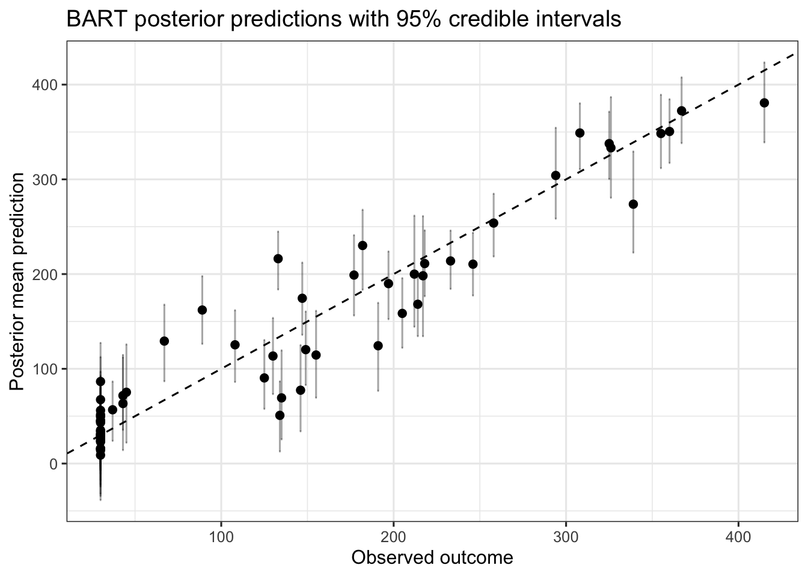
# ===============================================================
# Width of posterior predictive intervals
# ===============================================================
bart_pred_tbl <- bart_pred_tbl %>%
mutate(ci_width = pred_q975 - pred_q025)
bart_pred_tbl %>%
ggplot(aes(x = ci_width)) +
geom_histogram(bins = 20) +
labs(
title = "Distribution of BART predictive interval widths",
x = "Credible interval width",
y = "Count"
) +
theme_bw(base_size = 12)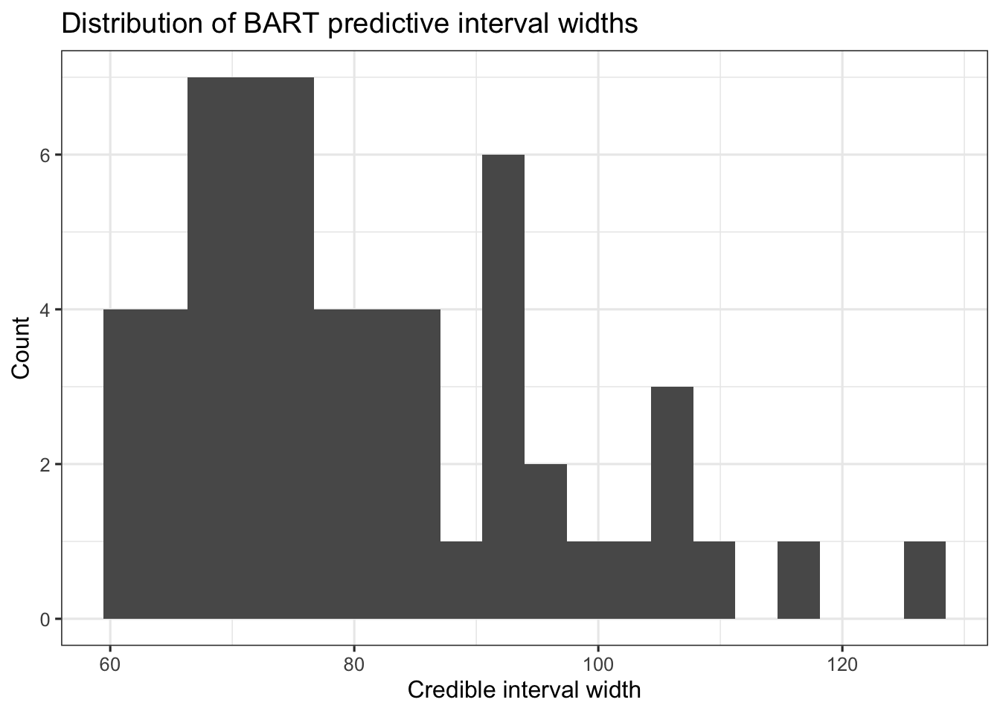
The outputs presented in this section illustrate how the posterior predictive distribution produced by a BART model can be explored and interpreted in practice. Because BART generates many posterior draws of the regression function, each observation is associated not with a single predicted value but with a distribution of plausible predictions. The code above summarizes this information and produces three complementary outputs that help interpret the model’s predictive behavior and its associated uncertainty.
The first output is a small table showing the posterior predictive summaries for the first observations in the test set. For each observation, the table reports the observed outcome together with the posterior mean prediction and several quantiles of the posterior predictive distribution. The columns pred_q025 and pred_q975 define the bounds of the 95% credible interval, while pred_q50 corresponds to the posterior median. These summaries allow us to compare the observed values with the model’s central prediction and to inspect the range of outcomes that remain plausible under the posterior distribution.
The second output visualizes these predictions by plotting the observed outcome against the posterior mean prediction. Each point corresponds to one observation in the test set, and the vertical bars represent the 95% credible interval derived from the posterior predictive samples. The dashed diagonal line indicates perfect agreement between observed and predicted values. Points close to this line indicate accurate predictions, while the vertical bars illustrate the uncertainty associated with each prediction. In a Bayesian model such as BART, this uncertainty is an integral part of the predictive output rather than a separate post-hoc estimate.
The third output summarizes the width of the predictive credible intervals across all observations. By plotting the distribution of interval widths, we obtain a global view of how uncertain the model’s predictions are throughout the dataset. Narrow intervals correspond to observations for which the model produces stable predictions across posterior draws, while wider intervals indicate regions of the predictor space where predictions are more uncertain. Such variability in interval width often reflects differences in data density or complexity of the relationship between predictors and the outcome.
13.3.3 Variable usage across the posterior ensemble
Beyond predictive summaries, the BART model also provides structural information about how predictors are used within the posterior tree ensemble. In the dbarts object this information is stored in the matrix varcount. Each row corresponds to a posterior draw, and each column records how many times a predictor was used in tree splitting across the ensemble.
Although this measure does not represent a causal or marginal effect, it provides a useful structural summary of variable importance. Predictors that appear frequently and consistently across posterior draws can be interpreted as stable structural components of the ensemble.
# ===============================================================
# Variable usage across posterior draws
# ===============================================================
varcount_tbl <- as_tibble(bart_fit$varcount) %>%
setNames(predictor_names) %>%
mutate(draw = row_number()) %>%
pivot_longer(
cols = -draw,
names_to = "term",
values_to = "usage"
)
var_usage_summary <- varcount_tbl %>%
group_by(term) %>%
summarise(
mean_usage = mean(usage),
sd_usage = sd(usage),
.groups = "drop"
) %>%
arrange(desc(mean_usage))
var_usage_summary# A tibble: 5 × 3
term mean_usage sd_usage
<chr> <dbl> <dbl>
1 wt.loss 25.4 4.10
2 ph.ecog 24.4 3.78
3 ph.karno 23.2 4.11
4 age 19.5 4.35
5 sex_male 18.6 3.73# ===============================================================
# Posterior mean variable usage
# ===============================================================
var_usage_summary %>%
ggplot(aes(x = reorder(term, mean_usage), y = mean_usage)) +
geom_col() +
coord_flip() +
labs(
title = "Posterior mean variable usage in BART",
x = "",
y = "Mean number of splits"
) +
theme_bw(base_size = 12)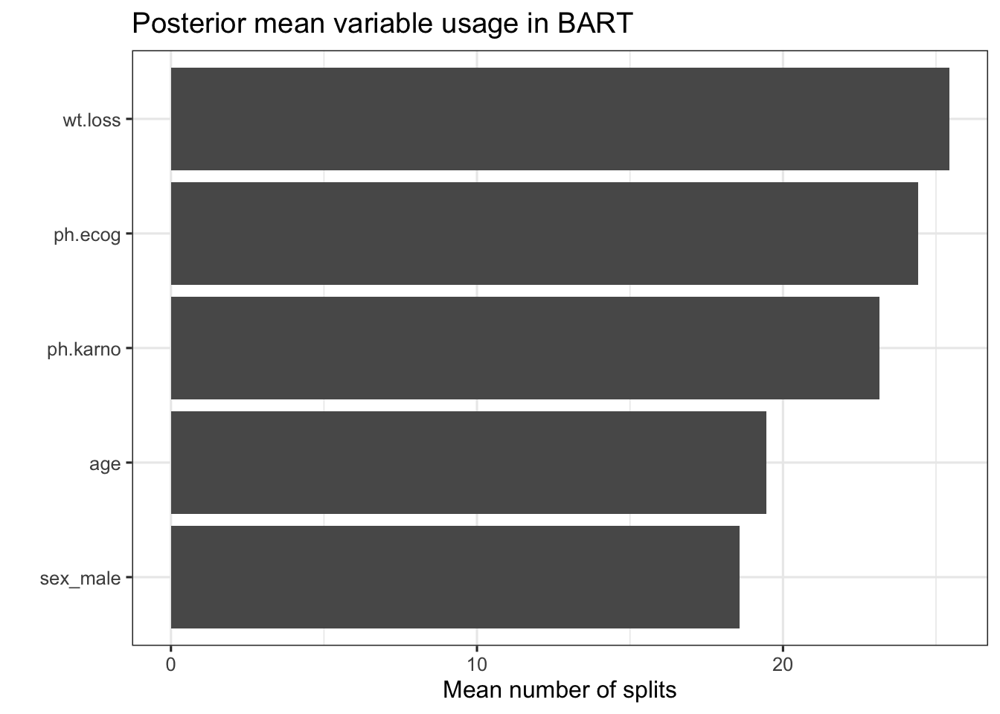
13.3.4 Structural interpretability with bartMan
While posterior predictions and variable usage provide useful summaries of predictive behavior, they do not yet reveal the internal structure of the tree ensemble. To examine these structural properties we use the bartMan framework, which extracts tree-level information from the fitted BART model and provides a set of visual tools for exploring the ensemble.
The first step is to extract the tree structures from the fitted BART object. This representation allows us to compute inclusion-based variable importance, interaction summaries, and tree-structure visualizations.
Internally, the dbarts implementation stores the posterior ensemble of trees in a compact format optimized for MCMC sampling and prediction. While efficient for computation, this internal representation is not immediately convenient for structural interpretation. The bartMan framework therefore provides a set of utilities that reorganize the fitted BART model into a tree-oriented structure designed for exploratory analysis.
The function extractTreeData() performs this transformation. It extracts the posterior trees from the fitted BART object and reconstructs them as an explicit collection of tree structures together with their associated split variables, node depths, and terminal node values. Importantly, this step does not refit the model. Instead, it simply translates the posterior tree ensemble into a format that allows downstream interpretability tools to operate on the structure of the ensemble.
The resulting object contains the full set of trees across posterior iterations and forms the basis for several interpretability diagnostics. Once the trees have been extracted, we can compute interaction matrices, visualize individual trees, examine splitting frequencies, and study structural patterns across the posterior ensemble.
bart_train_df <- as.data.frame(X_train)
colnames(bart_train_df) <- predictor_names
bart_train_df$y <- y_train# ===============================================================
# Extract bartMan tree data
# ===============================================================
trees_data <- extractTreeData(
model = bart_fit,
data = bart_train_df
)
saveRDS(
trees_data,
"/Users/danilosarti/Documents/ai_health_book/models/lung_sim_complete/bart_trees_data_small.rds"
)trees_data<-readRDS(
"/Users/danilosarti/Documents/ai_health_book/models/lung_sim_complete/bart_trees_data_small.rds"
)13.3.5 VIVI interaction summaries for BART
Using the extracted tree structure we can compute VIVI matrices, which summarize variable importance and interaction strength jointly. In these matrices the diagonal elements represent marginal variable importance, while the off-diagonal elements represent pairwise interaction strength derived from the posterior tree ensemble.
The VIVI matrix provides a joint representation of variable importance and variable interaction strength derived directly from the posterior tree ensemble. Each element of the matrix summarizes how frequently variables appear within the splitting structure of the trees and how often they co-occur along decision paths.
In this representation, the diagonal elements correspond to marginal variable importance. These values reflect how often each predictor participates in splitting rules across the ensemble of posterior trees. Larger diagonal values therefore indicate predictors that play a central role in partitioning the predictor space.
The off-diagonal elements represent interaction strength between pairs of predictors. Interactions arise when two variables appear together along paths within the same trees, meaning that the effect of one predictor depends on the value of another. The magnitude of these entries summarizes how frequently such joint splitting patterns occur across the posterior ensemble.
The argument metric = "propMean" specifies that interaction strength is computed using the mean proportion of tree splits across posterior draws. This produces a stable summary of how strongly pairs of predictors participate in the structural decomposition of the response surface.
The resulting matrix therefore provides a structural view of the fitted model, revealing both which variables are influential and which combinations of variables jointly shape the predictive function.
# ===============================================================
# VIVI matrix
# ===============================================================
stdMat <- viviBartMatrix(
trees = trees_data,
type = "standard",
metric = "propMean"
)
saveRDS(
stdMat,
"/Users/danilosarti/Documents/ai_health_book/models/lung_sim_complete/stdMat.rds"
)library(bartMan)
viviBartPlot(stdMat)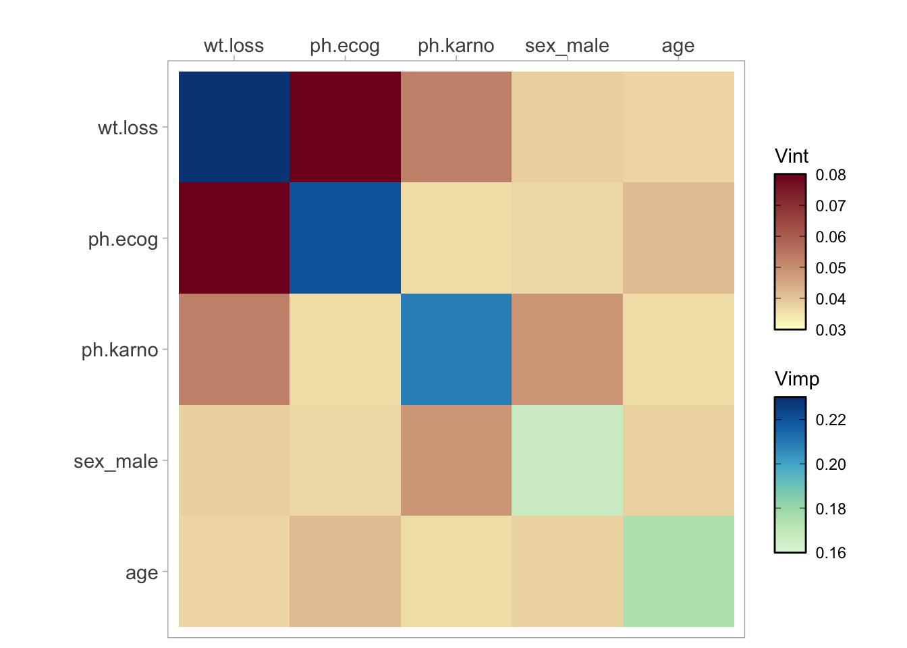
The figure displays the VIVI matrix derived from the posterior tree ensemble of the BART model. This visualization jointly summarizes variable importance and pairwise interaction strength extracted from the splitting structure of the trees.
The diagonal elements of the matrix represent marginal variable importance (Vimp). These values measure how frequently each predictor appears in splitting rules across the ensemble of trees and across posterior draws. Variables with larger diagonal values therefore contribute more strongly to the partitioning of the predictor space. In the present model, the largest diagonal values are observed for wt.loss, ph.ecog, and ph.karno, indicating that these predictors play the most prominent role in shaping the predictive structure of the BART model. This result is consistent with earlier analyses in this chapter, where measures of patient functional status and clinical deterioration emerged as key determinants of predicted survival.
The off-diagonal elements represent pairwise interaction strength (Vint) between predictors. These entries quantify how frequently two variables appear together along decision paths within the trees. Larger values therefore indicate stronger structural interactions in the posterior ensemble. The strongest interaction in the matrix occurs between wt.loss and ph.ecog, suggesting that the model frequently uses these two predictors jointly when partitioning the predictor space. This indicates that the effect of weight loss on predicted survival depends strongly on the patient’s performance status.
A second notable interaction appears between wt.loss and ph.karno, again reflecting the close relationship between physical deterioration and functional capacity. Since the Karnofsky score and ECOG score both measure aspects of patient performance status, their interactions with weight loss are clinically plausible: the prognostic effect of weight loss is likely to differ depending on the patient’s overall functional condition.
By contrast, predictors such as sex_male and age show weaker interaction patterns. Their off-diagonal values are relatively small, indicating that these variables are used less frequently in joint splitting rules with other predictors. Although these variables still contribute to the predictive model, their influence appears to be more marginal compared with the functional status indicators.
13.3.6 Visualising the posterior tree ensemble
Although BART is an ensemble model, individual trees can still be inspected to understand how the predictor space is partitioned locally. The following plots show selected trees from the posterior ensemble.
Because BART represents the regression function as the sum of many small trees, the internal structure of the model can also be examined at the level of individual trees. Unlike classical decision trees such as CART, however, a single BART tree should not be interpreted as a standalone predictive model. Each tree typically contributes only a small component to the overall regression function, and the final prediction arises from the sum of many such weak learners.
Visualizing individual trees is therefore useful not for extracting deterministic decision rules, but for understanding how the ensemble partitions the predictor space locally. By inspecting the splitting variables and tree depths, one can observe how the model distributes predictive structure across multiple simple trees.
The plotSingleTree() function displays one tree from a specific posterior iteration. This provides a detailed view of the local splitting rules and the hierarchical structure of the partitions induced by that tree. Different visualization styles, such as dendrogram and icicle layouts, emphasize different aspects of the tree topology.
The plotTrees() function extends this idea by visualizing several trees from a given posterior iteration simultaneously. This allows the analyst to see how multiple trees contribute to the overall ensemble structure. Because BART models typically contain many shallow trees, these visualizations often reveal repeated splitting patterns involving a small number of influential predictors.
# ===============================================================
# Visualise individual trees
# ===============================================================
plotSingleTree(
trees = trees_data,
treeNo = 1,
iter = 1,
plotType = "dendrogram"
)Iteration 1 and Tree Number 1 Selected.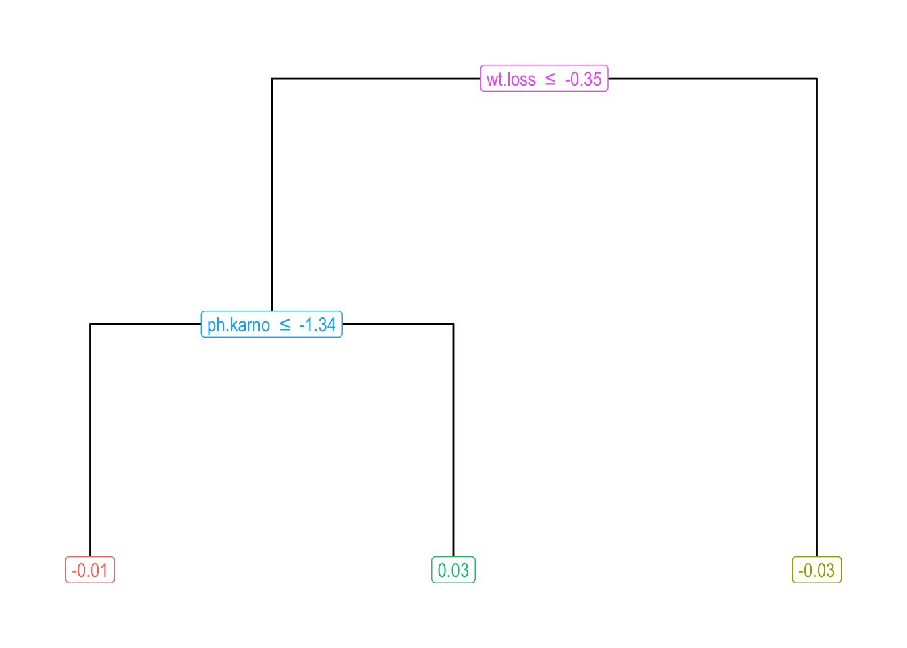
plotSingleTree(
trees = trees_data,
treeNo = 1,
iter = 1,
plotType = "icicle"
)Iteration 1 and Tree Number 1 Selected.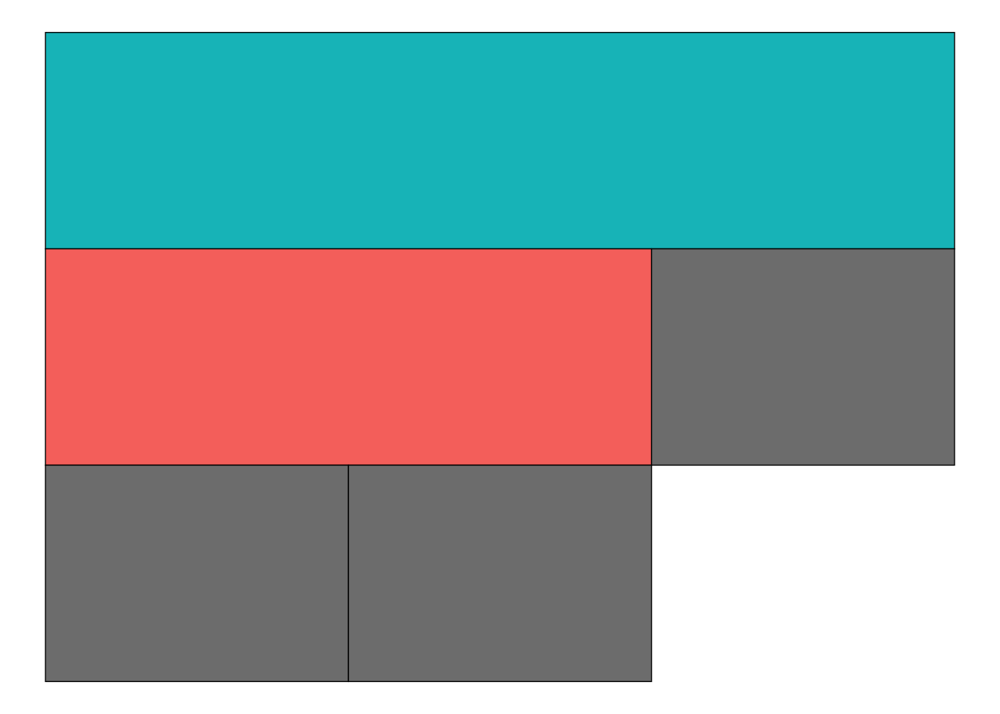
The figures above show two visual representations of a single tree extracted from the posterior BART ensemble. The first plot presents the tree in dendrogram form, which highlights the hierarchical sequence of splitting rules, while the second plot shows the same structure in an icicle representation, which emphasizes how the predictor space is partitioned into regions.
It is important to remember that in a BART model no individual tree represents the final predictive model. Unlike classical decision trees such as CART, where the entire predictive structure is contained in one tree, BART represents the regression function as the sum of many small trees. Each individual tree contributes only a small adjustment to the overall prediction. Consequently, the trees in a BART ensemble are typically shallow and simple, and their interpretation should be understood in the context of the ensemble rather than in isolation.
In the dendrogram representation, the root node shows the first partition of the predictor space, which in this case is based on weight loss (wt.loss). Observations with standardized weight loss below the threshold are sent to the left branch, while those above the threshold follow the right branch. The left branch is further partitioned using Karnofsky performance score (ph.karno), illustrating how the model refines predictions by combining multiple indicators of patient condition. The terminal nodes display small numeric values representing the contribution of that tree to the predicted outcome. These values are typically modest because the final prediction is obtained by summing contributions from many trees across the ensemble.
The icicle representation provides an alternative view of the same structure. Instead of focusing on hierarchical branching, the icicle plot emphasizes how the predictor space is divided into rectangular regions corresponding to the terminal nodes of the tree. Each block represents a region of the predictor space in which the model assigns the same local contribution to the prediction. The colors highlight these regions and help visualize how the tree partitions the space according to the splitting variables.
Taken together, these plots illustrate the local decision structure learned by one tree in the BART ensemble. Although each tree is simple, the aggregation of many such trees allows the model to approximate complex nonlinear relationships and interactions among predictors. Examining individual trees therefore provides insight into the basic building blocks of the model while reinforcing the idea that the predictive function emerges from the collective behavior of the entire ensemble.
plotTrees(
trees = trees_data,
iter = 1,
removeStump = TRUE,
selectedVars = c("age", "sex_male", "ph.ecog", "ph.karno", "wt.loss")
)Iteration 1 Selected.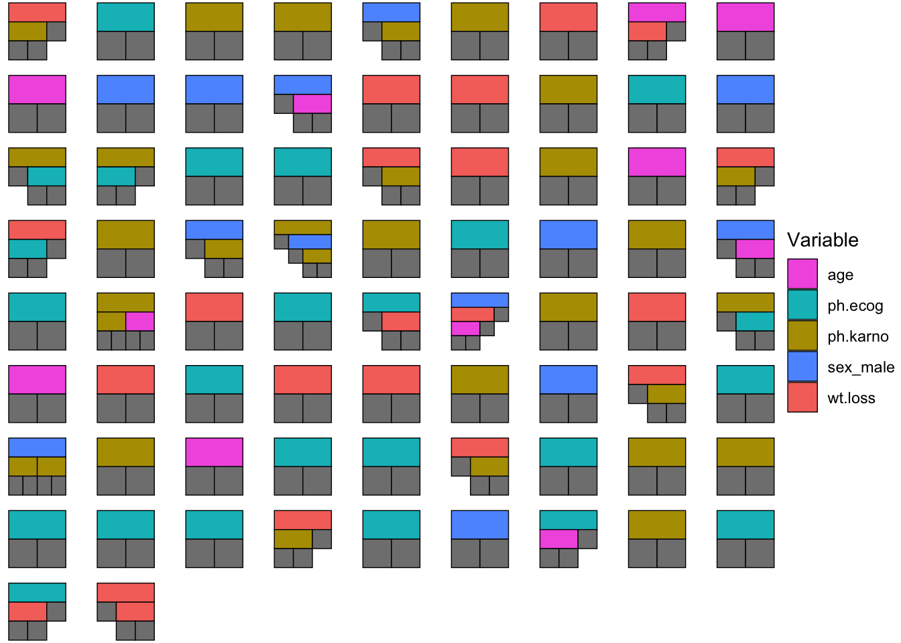
The figure above displays a collection of trees extracted from a single posterior iteration of the BART ensemble. Each small panel corresponds to one tree, and the colored regions indicate which predictor variable is used in the splitting rule at the root of that tree. The legend associates colors with the predictors: age, ph.ecog, ph.karno, sex_male, and wt.loss. The gray blocks represent terminal nodes where no further splitting occurs.
Several important structural properties of BART models become apparent in this visualization. First, the trees are small and shallow. Most trees contain only one or two splits before reaching terminal nodes. This is a characteristic design feature of BART: instead of fitting a few deep trees, the algorithm constructs a large ensemble of weak learners whose contributions are summed to approximate the regression function.
Second, the visualization highlights which predictors tend to appear near the root of the trees. Variables such as wt.loss, ph.ecog, and ph.karno appear frequently as root splitting variables across many trees. This pattern reinforces the importance results observed earlier in the VIVI matrix, where these variables also exhibited strong marginal importance and interaction structure. Their repeated appearance at the top of the trees indicates that the model often begins its partitioning of the predictor space using indicators related to patient functional status and clinical deterioration.
By contrast, variables such as age and sex_male appear less frequently as primary splitting variables. When they do appear, they typically contribute secondary refinements within the partitioning structure rather than defining the main divisions of the predictor space. This suggests that demographic variables play a more modest role in the predictive structure compared with clinical status indicators.
Finally, the figure illustrates how the BART model distributes predictive complexity across many small trees rather than concentrating it in a single structure. Each tree contributes a small local adjustment to the overall regression function. When hundreds of such trees are aggregated across posterior draws, the ensemble is able to approximate complex nonlinear relationships and interaction effects while maintaining relatively simple individual components.
13.3.7 VSUPS
While the standard VIVI matrix summarizes the average importance and interaction strength across the posterior ensemble, it does not explicitly represent the stability of these structural patterns. Two variable interactions may have similar average magnitudes but very different levels of variability across posterior draws.
To address this limitation, the bartMan framework provides the VSUP (Variable Selection Uncertainty Plot) representation. VSUP extends the VIVI matrix by incorporating a measure of uncertainty associated with each importance and interaction estimate. This allows the analyst to distinguish interactions that are consistently present across posterior draws from those that appear only sporadically.
In the code below, the VSUP matrix is computed using the argument type = "vsup". The option metricError = "CV" specifies that uncertainty is quantified using the coefficient of variation across posterior draws. Interactions with higher variability therefore appear with stronger uncertainty signals in the visualization.
The resulting plot encodes two dimensions simultaneously: the magnitude of importance or interaction and the stability of that quantity across the posterior distribution. This representation highlights structural relationships that are both strong and stable, providing an uncertainty-aware perspective on the internal structure of the BART model.
vsupMat <- viviBartMatrix(
trees = trees_data,
type = "vsup",
metric = "propMean",
metricError = "CV"
)
saveRDS(
vsupMat,
file.path(models_dir, "vsupMat.rds")
)viviBartPlot(
vsupMat,
max_desat = 1,
pow_desat = 0.6,
max_light = 0.6,
pow_light = 1,
label = "CV"
)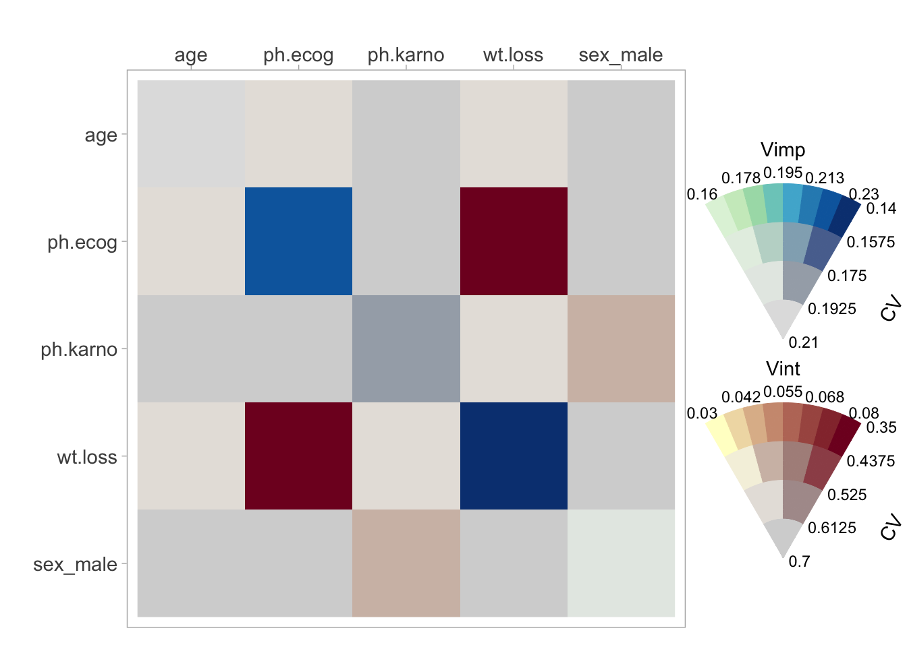
The figure above displays the VSUP (Variable Selection Uncertainty Plot) matrix derived from the posterior BART ensemble. This visualization extends the standard VIVI matrix by simultaneously representing variable importance, interaction strength, and the stability of these quantities across posterior draws.
As in the standard VIVI matrix, the diagonal elements represent marginal variable importance (Vimp). These values summarize how frequently each predictor appears in the splitting rules of the posterior tree ensemble. In this model, the diagonal entries indicate that wt.loss and ph.ecog remain among the most influential predictors, followed by ph.karno, while age and sex_male contribute more modestly to the predictive structure. This ranking is consistent with earlier results showing that variables related to patient functional status dominate the predictive architecture.
The off-diagonal elements represent pairwise interaction strength (Vint), indicating how often two predictors appear together along splitting paths in the ensemble of trees. The strongest interaction again appears between ph.ecog and wt.loss, confirming that the model frequently combines these variables when partitioning the predictor space. This interaction is clinically plausible, as weight loss and performance status often jointly reflect disease severity and physiological decline.
The distinctive feature of the VSUP representation is that it also encodes the uncertainty of these structural summaries. The circular scales shown on the right indicate how variability across posterior draws is represented through the coefficient of variation (CV). In this framework, interactions or importance measures that remain stable across posterior samples appear with stronger and more saturated colors, while relationships with greater variability appear more muted. This allows the analyst to distinguish structural patterns that are consistently supported by the posterior from those that fluctuate more substantially across draws.
In the present model, the strong interaction between ph.ecog and wt.loss not only has high magnitude but also appears relatively stable across posterior samples, reinforcing the conclusion that these variables jointly define an important region of the predictor space. By contrast, weaker interactions involving age or sex_male display lower magnitude and greater variability, suggesting that their influence is less central to the ensemble’s predictive structure.
13.4 Appendix
# ===============================================================
# 01_train_models_lung_sim_complete.R
# Interpretable AI — unified training script using lung_sim_complete
# ---------------------------------------------------------------
# Models:
# - OLS
# - LASSO / Ridge / Elastic Net
# - Regression Tree
# - Random Forest (ranger)
# - XGBoost
# - BART (dbarts)
# ---------------------------------------------------------------
# Design choices:
# - complete dataset (no missingness)
# - 5 clinical predictors only
# - continuous outcome: time
# - auxiliary binary outcome: status_bin (excluded from predictors)
# - save train/test/preprocessing objects for interpretability workflows
# ===============================================================
# ----------------------------
# 0) Packages
# ----------------------------
pkgs <- c(
"tidyverse", "tidymodels", "glmnet",
"rpart", "ranger", "xgboost",
"dbarts", "broom"
)
to_install <- pkgs[!pkgs %in% rownames(installed.packages())]
if (length(to_install) > 0) install.packages(to_install)
suppressPackageStartupMessages({
library(tidyverse)
library(tidymodels)
library(glmnet)
library(rpart)
library(ranger)
library(xgboost)
library(dbarts)
library(broom)
})
# ----------------------------
# 1) Paths + read data
# ----------------------------
data_path <- "/Users/danilosarti/Documents/ai_health_book/data/lung_sim_complete.rds"
models_dir <- "/Users/danilosarti/Documents/ai_health_book/models/lung_sim_complete"
dir.create(models_dir, recursive = TRUE, showWarnings = FALSE)
df_small <- readRDS(data_path)
# ----------------------------
# 2) Targets / ID
# ----------------------------
y_cont <- "time"
y_bin <- "status_bin"
id_col <- "patient_id"
# ----------------------------
# 3) Split data
# ----------------------------
set.seed(2026)
spl <- initial_split(df_small, prop = 0.75, strata = status_bin)
train_df <- training(spl)
test_df <- testing(spl)
# ----------------------------
# 4) Preprocessing recipe
# ---------------------------------------------------------------
# Keep:
# - raw train/test data
# - baked train/test data
# - status_bin removed from predictors to avoid leakage
# ---------------------------------------------------------------
rec_base <- recipe(
formula(paste(y_cont, "~ .")),
data = train_df
) %>%
update_role(all_of(id_col), new_role = "id") %>%
step_rm(all_of(c(id_col, y_bin, "status"))) %>%
step_dummy(all_nominal_predictors(), one_hot = FALSE) %>%
step_zv(all_predictors()) %>%
step_normalize(all_numeric_predictors())
prep_rec <- prep(rec_base, training = train_df, verbose = FALSE)
train_baked <- bake(prep_rec, new_data = train_df)
test_baked <- bake(prep_rec, new_data = test_df)
X_train <- train_baked %>% select(-all_of(y_cont)) %>% as.matrix()
X_test <- test_baked %>% select(-all_of(y_cont)) %>% as.matrix()
y_train <- train_baked[[y_cont]]
y_test <- test_baked[[y_cont]]
predictor_names <- colnames(X_train)
# ----------------------------
# 5) Save preprocessing objects
# ----------------------------
saveRDS(
list(
split = spl,
recipe = prep_rec,
train_df = train_df,
test_df = test_df,
train_baked = train_baked,
test_baked = test_baked,
X_train = X_train,
X_test = X_test,
y_train = y_train,
y_test = y_test,
predictor_names = predictor_names,
y_cont = y_cont,
y_bin = y_bin,
id_col = id_col
),
file = file.path(models_dir, "prep_objects.rds")
)
# ----------------------------
# 6) Helper metrics
# ----------------------------
rmse_vec <- yardstick::rmse_vec
mae_vec <- yardstick::mae_vec
# ===============================================================
# 7) OLS
# ===============================================================
ols_fit <- lm(time ~ ., data = train_baked)
ols_pred <- predict(ols_fit, newdata = test_baked)
ols_metrics <- tibble(
model = "OLS",
rmse = rmse_vec(y_test, ols_pred),
mae = mae_vec(y_test, ols_pred)
)
coef_ols_tbl <- broom::tidy(ols_fit) %>%
transmute(
model = "OLS",
term = term,
estimate = estimate,
std.error = std.error,
statistic = statistic,
p.value = p.value
) %>%
filter(term != "(Intercept)") %>%
mutate(abs_estimate = abs(estimate))
saveRDS(
list(
model = ols_fit,
metrics = ols_metrics,
coef_tbl = coef_ols_tbl
),
file = file.path(models_dir, "ols_small.rds")
)
# ===============================================================
# 8) Regularized regression: LASSO / Ridge / Elastic Net
# ===============================================================
set.seed(2026)
fit_glmnet_cv <- function(X, y, alpha, family = "gaussian", nfolds = 10) {
cv.glmnet(
x = X,
y = y,
family = family,
alpha = alpha,
nfolds = nfolds,
standardize = FALSE
)
}
lasso_cv <- fit_glmnet_cv(X_train, y_train, alpha = 1)
ridge_cv <- fit_glmnet_cv(X_train, y_train, alpha = 0)
enet_alpha <- 0.5
enet_cv <- fit_glmnet_cv(X_train, y_train, alpha = enet_alpha)
mod_lasso <- glmnet(
X_train, y_train,
alpha = 1,
lambda = lasso_cv$lambda.min,
standardize = FALSE
)
mod_ridge <- glmnet(
X_train, y_train,
alpha = 0,
lambda = ridge_cv$lambda.min,
standardize = FALSE
)
mod_enet <- glmnet(
X_train, y_train,
alpha = enet_alpha,
lambda = enet_cv$lambda.min,
standardize = FALSE
)
pred_lasso <- as.numeric(predict(mod_lasso, newx = X_test))
pred_ridge <- as.numeric(predict(mod_ridge, newx = X_test))
pred_enet <- as.numeric(predict(mod_enet, newx = X_test))
glmnet_metrics <- bind_rows(
tibble(model = "LASSO", rmse = rmse_vec(y_test, pred_lasso), mae = mae_vec(y_test, pred_lasso)),
tibble(model = "Ridge", rmse = rmse_vec(y_test, pred_ridge), mae = mae_vec(y_test, pred_ridge)),
tibble(model = paste0("ElasticNet_a", enet_alpha), rmse = rmse_vec(y_test, pred_enet), mae = mae_vec(y_test, pred_enet))
)
coef_lasso_tbl <- as.matrix(coef(mod_lasso)) %>%
as.data.frame() %>%
tibble::rownames_to_column("term") %>%
rename(estimate = s0) %>%
mutate(
model = "LASSO",
std.error = NA_real_,
statistic = NA_real_,
p.value = NA_real_
) %>%
filter(term != "(Intercept)") %>%
mutate(abs_estimate = abs(estimate))
coef_ridge_tbl <- as.matrix(coef(mod_ridge)) %>%
as.data.frame() %>%
tibble::rownames_to_column("term") %>%
rename(estimate = s0) %>%
mutate(
model = "Ridge",
std.error = NA_real_,
statistic = NA_real_,
p.value = NA_real_
) %>%
filter(term != "(Intercept)") %>%
mutate(abs_estimate = abs(estimate))
coef_enet_tbl <- as.matrix(coef(mod_enet)) %>%
as.data.frame() %>%
tibble::rownames_to_column("term") %>%
rename(estimate = s0) %>%
mutate(
model = paste0("ElasticNet_a", enet_alpha),
std.error = NA_real_,
statistic = NA_real_,
p.value = NA_real_
) %>%
filter(term != "(Intercept)") %>%
mutate(abs_estimate = abs(estimate))
coef_all_tbl <- bind_rows(
coef_ols_tbl,
coef_lasso_tbl,
coef_ridge_tbl,
coef_enet_tbl
)
coef_sparsity_tbl <- bind_rows(
coef_lasso_tbl %>%
summarise(
model = "LASSO",
n_nonzero = sum(estimate != 0),
n_zero = sum(estimate == 0)
),
coef_ridge_tbl %>%
summarise(
model = "Ridge",
n_nonzero = sum(estimate != 0),
n_zero = sum(estimate == 0)
),
coef_enet_tbl %>%
summarise(
model = paste0("ElasticNet_a", enet_alpha),
n_nonzero = sum(estimate != 0),
n_zero = sum(estimate == 0)
)
)
saveRDS(
list(
lasso = lasso_cv,
ridge = ridge_cv,
enet = enet_cv,
mod_lasso = mod_lasso,
mod_ridge = mod_ridge,
mod_enet = mod_enet,
enet_alpha = enet_alpha,
metrics = glmnet_metrics,
coef_lasso_tbl = coef_lasso_tbl,
coef_ridge_tbl = coef_ridge_tbl,
coef_enet_tbl = coef_enet_tbl,
coef_all_tbl = coef_all_tbl,
coef_sparsity_tbl = coef_sparsity_tbl
),
file = file.path(models_dir, "glmnet_small.rds")
)
# ===============================================================
# 9) Regression tree (rpart)
# ===============================================================
set.seed(2026)
tree_fit <- rpart::rpart(
time ~ .,
data = train_baked,
method = "anova",
control = rpart::rpart.control(cp = 0.001, maxdepth = 5, minsplit = 15)
)
cp_tbl <- tree_fit$cptable
best_row <- which.min(cp_tbl[, "xerror"])
best_cp <- cp_tbl[best_row, "CP"]
tree_pruned <- rpart::prune(tree_fit, cp = best_cp)
tree_pred <- predict(tree_pruned, newdata = test_baked)
tree_metrics <- tibble(
model = "Tree_rpart",
rmse = rmse_vec(y_test, tree_pred),
mae = mae_vec(y_test, tree_pred)
)
saveRDS(
list(
model = tree_pruned,
metrics = tree_metrics,
cp_table = cp_tbl,
best_cp = best_cp
),
file = file.path(models_dir, "tree_reg_small.rds")
)
# ===============================================================
# 10) Random Forest (ranger)
# ===============================================================
set.seed(2026)
rf_fit <- ranger(
formula = time ~ .,
data = train_baked,
num.trees = 500,
mtry = max(1, floor(sqrt(ncol(train_baked) - 1))),
min.node.size = 8,
importance = "impurity",
seed = 2026
)
rf_pred <- predict(rf_fit, data = test_baked)$predictions
rf_metrics <- tibble(
model = "RF_ranger",
rmse = rmse_vec(y_test, rf_pred),
mae = mae_vec(y_test, rf_pred)
)
saveRDS(
list(
model = rf_fit,
metrics = rf_metrics,
vimp = rf_fit$variable.importance,
importance_type = "impurity"
),
file = file.path(models_dir, "rf_reg_small.rds")
)
# ===============================================================
# 11) XGBoost regression
# ===============================================================
set.seed(2026)
dtrain <- xgb.DMatrix(data = X_train, label = y_train)
dtest <- xgb.DMatrix(data = X_test, label = y_test)
params <- list(
objective = "reg:squarederror",
eval_metric = "rmse",
eta = 0.03,
max_depth = 3,
min_child_weight = 3,
subsample = 0.8,
colsample_bytree = 0.8
)
xgb_fit <- xgb.train(
params = params,
data = dtrain,
nrounds = 800,
watchlist = list(train = dtrain, test = dtest),
early_stopping_rounds = 30,
verbose = 0
)
xgb_pred <- predict(xgb_fit, dtest)
xgb_metrics <- tibble(
model = "XGB_reg",
rmse = rmse_vec(y_test, xgb_pred),
mae = mae_vec(y_test, xgb_pred)
)
xgb_imp <- xgb.importance(model = xgb_fit)
saveRDS(
list(
model = xgb_fit,
metrics = xgb_metrics,
importance = xgb_imp,
params = params,
feature_names = predictor_names
),
file = file.path(models_dir, "xgb_reg_small.rds")
)
# ===============================================================
# 12) BART regression (dbarts)
# ===============================================================
set.seed(2026)
bart_fit <- dbarts::bart(
x.train = X_train,
y.train = y_train,
x.test = X_test,
keeptrees = TRUE,
ntree = 80,
nskip = 200,
ndpost = 600,
verbose = FALSE
)
bart_pred_mean <- colMeans(bart_fit$yhat.test)
bart_metrics <- tibble(
model = "BART_dbarts",
rmse = rmse_vec(y_test, bart_pred_mean),
mae = mae_vec(y_test, bart_pred_mean)
)
saveRDS(
list(
model = bart_fit,
metrics = bart_metrics,
X_train = X_train,
X_test = X_test,
y_train = y_train,
y_test = y_test,
predictor_names = predictor_names
),
file = file.path(models_dir, "bart_reg_small.rds")
)
# ===============================================================
# 13) Save combined continuous-model metrics
# ===============================================================
metrics_tbl <- bind_rows(
ols_metrics,
glmnet_metrics,
tree_metrics,
rf_metrics,
xgb_metrics,
bart_metrics
) %>%
arrange(rmse)
print(metrics_tbl)
saveRDS(
metrics_tbl,
file = file.path(models_dir, "metrics_comparison_continuous_no_nn.rds")
)
# ===============================================================
# End main training script
# ===============================================================# ===============================================================
# CHUNK 2 — Neural Network training (robust Keras 3 version)
# ===============================================================
# What this chunk does:
# - Reads the SAME baked train/test data used in the chapter
# - Builds a small feed-forward neural network for regression
# - Converts R objects explicitly to NumPy float32 arrays
# - Trains the model safely under Keras 3 + reticulate
# - Evaluates RMSE and MAE on the test set
# - Saves the trained model in .keras format
# - Saves a companion .rds object with metrics + history_df + model path
# - Reloads the saved model as a sanity check
# ===============================================================
library(keras)
library(reticulate)
library(tidyverse)
library(yardstick)
# ---------------------------------------------------------------
# 1) Ensure the correct Python environment is used
# ---------------------------------------------------------------
use_virtualenv(
"/Users/danilosarti/Documents/ai_health_book/.venv-genai",
required = TRUE
)
# Optional diagnostics
print(py_config())
print(py_module_available("tensorflow"))
print(py_module_available("keras"))
print(py_module_available("numpy"))
# ---------------------------------------------------------------
# 2) Paths
# ---------------------------------------------------------------
models_dir <- "/Users/danilosarti/Documents/ai_health_book/models/lung_sim_complete"
# ---------------------------------------------------------------
# 3) Read preprocessing objects
# ---------------------------------------------------------------
prep_obj <- readRDS(file.path(models_dir, "prep_objects.rds"))
train_baked <- prep_obj$train_baked
test_baked <- prep_obj$test_baked
y_cont <- prep_obj$y_cont
# ---------------------------------------------------------------
# 4) Prepare matrices
# ---------------------------------------------------------------
X_train <- train_baked %>%
dplyr::select(-all_of(y_cont)) %>%
as.data.frame() %>%
data.matrix()
X_test <- test_baked %>%
dplyr::select(-all_of(y_cont)) %>%
as.data.frame() %>%
data.matrix()
y_train <- as.numeric(train_baked[[y_cont]])
y_test <- as.numeric(test_baked[[y_cont]])
# Force storage mode explicitly
storage.mode(X_train) <- "double"
storage.mode(X_test) <- "double"
storage.mode(y_train) <- "double"
storage.mode(y_test) <- "double"
# Safety checks
stopifnot(is.matrix(X_train))
stopifnot(is.matrix(X_test))
stopifnot(is.numeric(y_train))
stopifnot(is.numeric(y_test))
stopifnot(!anyNA(X_train))
stopifnot(!anyNA(X_test))
stopifnot(!anyNA(y_train))
stopifnot(!anyNA(y_test))
stopifnot(all(is.finite(X_train)))
stopifnot(all(is.finite(X_test)))
stopifnot(all(is.finite(y_train)))
stopifnot(all(is.finite(y_test)))
cat("X_train dim:", dim(X_train), "\n")
cat("X_test dim:", dim(X_test), "\n")
cat("y_train length:", length(y_train), "\n")
cat("y_test length:", length(y_test), "\n")
# ---------------------------------------------------------------
# 5) Convert explicitly to NumPy float32 arrays
# ---------------------------------------------------------------
np <- import("numpy", convert = FALSE)
X_train_np <- np$array(X_train, dtype = "float32")
X_test_np <- np$array(X_test, dtype = "float32")
# For regression, pass y as column vector
y_train_np <- np$array(matrix(y_train, ncol = 1), dtype = "float32")
y_test_np <- np$array(matrix(y_test, ncol = 1), dtype = "float32")
# ---------------------------------------------------------------
# 6) Build neural network
# ---------------------------------------------------------------
set.seed(2026)
inputs <- layer_input(
shape = c(ncol(X_train)),
name = "input"
)
outputs <- inputs %>%
layer_dense(units = 64, activation = "relu", name = "dense_1") %>%
layer_dropout(rate = 0.15, name = "dropout_1") %>%
layer_dense(units = 32, activation = "relu", name = "dense_2") %>%
layer_dropout(rate = 0.15, name = "dropout_2") %>%
layer_dense(units = 1, activation = "linear", name = "output")
nn_model <- keras_model(
inputs = inputs,
outputs = outputs,
name = "nn_reg"
)
# ---------------------------------------------------------------
# 7) Compile model
# ---------------------------------------------------------------
nn_model$compile(
optimizer = optimizer_adam(learning_rate = 1e-3),
loss = "mse",
metrics = list("mae")
)
# ---------------------------------------------------------------
# 8) Train model
# ---------------------------------------------------------------
history <- nn_model$fit(
x = X_train_np,
y = y_train_np,
validation_split = 0.2,
epochs = as.integer(200),
batch_size = as.integer(16),
callbacks = list(
callback_early_stopping(
patience = as.integer(20),
restore_best_weights = TRUE
)
),
verbose = as.integer(1)
)
# ---------------------------------------------------------------
# 9) Predict on test set
# ---------------------------------------------------------------
nn_pred <- as.numeric(nn_model$predict(X_test_np))
# ---------------------------------------------------------------
# 10) Compute metrics
# ---------------------------------------------------------------
nn_metrics <- tibble(
model = "NN_reg",
rmse = yardstick::rmse_vec(y_test, nn_pred),
mae = yardstick::mae_vec(y_test, nn_pred)
)
print(nn_metrics)
# ---------------------------------------------------------------
# 11) Save neural network
# ---------------------------------------------------------------
nn_model_path <- file.path(models_dir, "nn_reg_small.keras")
nn_model$save(filepath = nn_model_path)
# ---------------------------------------------------------------
# 12) Extract training history safely
# ---------------------------------------------------------------
history_df <- NULL
hist_list <- NULL
if (!is.null(history$history)) {
hist_list <- history$history
}
if (!is.null(hist_list)) {
metric_names <- names(hist_list)
if (length(metric_names) > 0) {
n_epochs <- length(as.numeric(unlist(hist_list[[1]])))
history_df <- tibble(epoch = seq_len(n_epochs))
for (nm in metric_names) {
history_df[[nm]] <- as.numeric(unlist(hist_list[[nm]]))
}
}
}
print(history_df)
# ---------------------------------------------------------------
# 13) Save companion object
# ---------------------------------------------------------------
saveRDS(
list(
metrics = nn_metrics,
history_df = history_df,
model_path = nn_model_path
),
file = file.path(models_dir, "nn_reg_small_history.rds")
)
# ---------------------------------------------------------------
# 14) Sanity check: reload saved model
# ---------------------------------------------------------------
nn_model_reload <- keras::load_model_tf(nn_model_path)
nn_pred_reload <- as.numeric(nn_model_reload$predict(X_test_np))
reload_check <- tibble(
original = nn_pred,
reloaded = nn_pred_reload,
abs_diff = abs(nn_pred - nn_pred_reload)
)
print(summary(reload_check$abs_diff))
# ---------------------------------------------------------------
# End chunk
# ---------------------------------------------------------------# ===============================================================
# 03_collect_metrics_lung_sim_complete.R
# Collect all final model performance metrics
# ===============================================================
library(tidyverse)
models_dir <- "/Users/danilosarti/Documents/ai_health_book/models/lung_sim_complete"
ols_obj <- readRDS(file.path(models_dir, "ols_small.rds"))
glmnet_obj <- readRDS(file.path(models_dir, "glmnet_small.rds"))
tree_obj <- readRDS(file.path(models_dir, "tree_reg_small.rds"))
rf_obj <- readRDS(file.path(models_dir, "rf_reg_small.rds"))
xgb_obj <- readRDS(file.path(models_dir, "xgb_reg_small.rds"))
bart_obj <- readRDS(file.path(models_dir, "bart_reg_small.rds"))
nn_obj <- readRDS(file.path(models_dir, "nn_reg_small_history.rds"))
metrics_tbl <- bind_rows(
ols_obj$metrics,
glmnet_obj$metrics,
tree_obj$metrics,
rf_obj$metrics,
xgb_obj$metrics,
bart_obj$metrics,
nn_obj$metrics
) %>%
arrange(rmse)
print(metrics_tbl)
saveRDS(
metrics_tbl,
file = file.path(models_dir, "metrics_comparison_continuous.rds")
)